I will avoid rigor; the emphasis of these notes is on practical statistics. However, it is sometimes helpful for me to state definitions in a more mathematically precise form than what is found in most non-mathematical sources, because it helps ease an itchy feeling.
Most of the information presented here has been taken verbatim from the following sources:
- Hartmann, K., Krois, J., & Rudolph, A. (2023). Statistics and Geodata Analysis using R. SOGA-R
- Rudolph, A., Krois, J., & Hartmann, K. (2023). Statistics and Geodata Analysis using Python. SOGA-Py
- The website Random
- DeGroot, M. H., & Schervish, M. J. (2012). Probability and Statistics (4th ed.). Addison-Wesley.
- Diez, D. M., Çetinkaya-Rundel, M., & Barr, C. D. (2019). OpenIntro Statistics (4th ed.). OpenIntro.
Measures of Central Tendency
A measure of central tendency summarizes a numerical dataset by a single value. Different measures capture different aspects of the data, and the word average is not precise until we specify which one we mean. We begin with arithmetic, weighted, geometric, and harmonic means. We will examine the median, quantiles, and mode next.
Definition (arithmetic mean).
For observations \(x_1,\ldots,x_n\) with \(n\geq 1\), the sample arithmetic mean is \[ \bar{x}=\frac{1}{n}\sum_{i=1}^n x_i. \] The symbol \(\mu\) usually denotes a population mean (or the expectation of a random variable, when it exists), while \(\bar{x}\) denotes the mean computed from a sample. The sample mean is often used to estimate the unknown population mean, but it is itself a statistic: another random sample will generally give a different \(\bar{x}\).
Lemma (decomposition of squared deviations).
For real numbers \(x_1,\ldots,x_n\) with sample mean \(\bar{x}\), and every \(c\in\mathbb{R}\),
\[\sum_{i=1}^{n}(x_i-c)^2 = \sum_{i=1}^{n}(x_i-\bar{x})^2+n(c-\bar{x})^2.\]
Proof. Write \(x_i-c=(x_i-\bar{x})+(\bar{x}-c)\), square, and sum. The cross term vanishes because \(\sum_i(x_i-\bar{x})=0\).
Theorem (least-squares characterization of the mean).
The sample mean is the unique minimizer of the sum of squared deviations:
\[\bar{x}=\underset{c\in\mathbb{R}}{\operatorname{argmin}}\sum_{i=1}^{n}(x_i-c)^2.\]
Proof. By the lemma, the squared-deviation sum is a constant plus \(n(c-\bar{x})^2\). Since \(n\geq1\), the additional term is zero exactly when \(c=\bar{x}\).
This least-squares property is why arithmetic means appear naturally in squared-error loss and least-squares estimation. However, an extreme observation can shift the mean substantially.
Experiment 1: an outlier and the sample mean.
import numpy as np
import matplotlib.pyplot as plt
data = np.array([42, 47, 50, 51, 55, 58, 60, 62, 65, 70], dtype=float)
with_outlier = np.append(data, 200)
means = [np.mean(data), np.mean(with_outlier)]
medians = [np.median(data), np.median(with_outlier)]
print(f"Mean: {means[0]:.2f} -> {means[1]:.2f}")
print(f"Median: {medians[0]:.2f} -> {medians[1]:.2f}")
x = np.arange(2)
fig, ax = plt.subplots(figsize=(8.5, 4.8))
ax.plot(x, means, marker="o", linewidth=2.1, markersize=8,
label="Arithmetic mean")
ax.plot(x, medians, marker="s", linewidth=2.1, markersize=7,
label="Median")
for i, value in enumerate(means):
ax.annotate(f"{value:.1f}", (i, value), xytext=(0, -20 if i == 0 else 10),
textcoords="offset points", ha="center", fontsize=10)
for i, value in enumerate(medians):
ax.annotate(f"{value:.1f}", (i, value), xytext=(0, 10 if i == 0 else -17),
textcoords="offset points", ha="center", fontsize=10)
ax.set_xticks(x, ["Original dataset", "After adding one outlier (200)"])
ax.set_xlim(-0.2, 1.2)
ax.set_ylim(50, 75)
ax.set_ylabel("Central value")
ax.set_title("One extreme observation shifts the mean much more than the median")
ax.grid(axis="y", alpha=0.25)
ax.legend(loc="upper left")
fig.tight_layout()
fig.savefig("means_outlier_experiment.png", dpi=180, bbox_inches="tight")
plt.show()

Definition (weighted arithmetic mean).
If observations \(x_1,\ldots,x_n\) have nonnegative weights \(w_1,\ldots,w_n\), not all zero, the weighted arithmetic mean is \[ \bar{x}_w=\frac{\sum_{i=1}^n w_i x_i}{\sum_{i=1}^n w_i}. \]
For example, if a college doubles the weight of a mathematics score relative to English, a student scoring 70 in mathematics and 55 in English has a weighted score of \((2\cdot70+55)/3=65\). An equally weighted average would be 62.5.
Weighting is particularly important when combining summaries of groups of different sizes. If one group has 10 individuals with mean 80 and another has 90 individuals with mean 60, the combined mean is \((10\cdot80+90\cdot60)/100=62\), not 70. This is a common data-aggregation pitfall: the overall mean is not generally the simple mean of subgroup means. Here the weights are subgroup sizes, but other weighting schemes (for example, survey weights) have different interpretations.
Experiment 2: averaging subgroup means correctly.
import numpy as np
group_sizes = np.array([10, 90])
group_means = np.array([80.0, 60.0])
naive_mean = np.mean(group_means) # Treats the groups as equally large.
overall_mean = np.average(group_means, weights=group_sizes)
print(f"Unweighted mean of group means: {naive_mean:.1f}")
print(f"Mean over all individuals: {overall_mean:.1f}")
assert np.isclose(overall_mean, 62.0)
# Experiment: change the group sizes and observe the overall mean.
Data science application: aggregating ratios and KPIs.
Dashboard metrics such as conversion rates, defect rates, click-through rates, and average
revenue per transaction are ratios. To combine them over groups, recompute the ratio from its
total numerator and total denominator. Taking the unweighted mean of group rates generally gives
the wrong overall metric. For example, the overall conversion rate is \[ \frac{\text{total
conversions}}{\text{total sessions}}, \] not generally the mean of daily or channel-specific
conversion rates. This is a useful distinction when interpreting
pandas.groupby output or aggregating SQL tables.
Experiment 3: conversion rates in a Pandas DataFrame.
import pandas as pd
# Counts and conversion rates reported for four days/channels.
daily = pd.DataFrame({
"channel": ["Organic", "Organic", "Ads", "Ads"],
"sessions": [100, 120, 10, 20],
"conversions": [4, 6, 2, 2],
})
daily["conversion_rate"] = daily["conversions"] / daily["sessions"]
# Incorrect if we want the rate over ALL sessions:
average_of_rates = daily["conversion_rate"].mean()
# Correct: ratio of totals = denominator-weighted mean of rates.
overall_rate = daily["conversions"].sum() / daily["sessions"].sum()
by_channel = daily.groupby("channel", as_index=False).agg(
sessions=("sessions", "sum"),
conversions=("conversions", "sum"),
)
by_channel["conversion_rate"] = (
by_channel["conversions"] / by_channel["sessions"]
)
print(f"Naive mean of four rates: {average_of_rates:.2%}")
print(f"Overall session conversion rate: {overall_rate:.2%}")
print(by_channel.to_string(index=False))
assert abs(overall_rate - 0.056) < 1e-12
# Experiment: make Ads sessions 1000 each and recompute.
Definition (geometric mean).
For strictly positive \(a_1,\ldots,a_n\), the geometric mean is \[ G=\left(\prod_{i=1}^n a_i\right)^{1/n}. \]
It is appropriate when equal-length periods contribute multiplicative factors. Suppose a population grows by 2% in the first year and by 5% in the second. Starting with one million people, the final population is \(1{,}000{,}000\cdot1.02\cdot1.05=1{,}071{,}000\). The arithmetic average of the two annual percentage changes is indeed 3.5%, but applying 3.5% in each year gives the slightly different result 1,071,225.
The equivalent constant annual compound rate is obtained by taking the geometric mean of the growth factors, not of the percentage changes themselves: \[ r_{\mathrm{compound}}= \left(\prod_{i=1}^n(1+r_i)\right)^{1/n}-1. \] In our example, \(\sqrt{1.02\cdot1.05}-1\approx0.0348913\), or about 3.4891% per year. The rates \(r_i\) can be negative, but this calculation assumes each growth factor \(1+r_i\) is positive; a -100% return is a special case and can never be recovered by subsequent ordinary percentage growth.
Experiment 4: the annualized compound growth rate.
from math import prod
from scipy.stats import gmean
annual_rates = [0.02, 0.05]
growth_factors = [1 + rate for rate in annual_rates]
initial_population = 1_000_000
actual_final = initial_population * prod(growth_factors)
equivalent_factor = gmean(growth_factors)
equivalent_rate = equivalent_factor - 1
reproduced_final = initial_population * equivalent_factor ** len(annual_rates)
print(f"Final population: {actual_final:,.0f}")
print(f"Equivalent annual growth: {100 * equivalent_rate:.4f}%")
print(f"Reproduced final population: {reproduced_final:,.0f}")
assert abs(actual_final - reproduced_final) < 1e-8
# Experiment: try [0.40, -0.20]. The rates are not averaged directly.
Definition (harmonic mean).
For positive values \(a_1,\ldots,a_n\), the harmonic mean is \[ H=\frac{n}{\displaystyle\sum_{i=1}^n 1/a_i}. \]
If two legs of a trip each cover 100 km, with speeds 50 km/h and 40 km/h, the average speed over the entire journey is total distance divided by total time: \[ \frac{200}{100/50+100/40}=\frac{2}{1/50+1/40} \approx44.44\ \text{km/h}. \] The arithmetic mean of the speeds (45 km/h) is not the journey's average speed. The harmonic mean is appropriate here because distances are equal, whereas the amount of time spent at each speed is not.
If the distances differ, use the distance-weighted harmonic mean: \[ H_w=\frac{\sum_{i=1}^n d_i}{\displaystyle\sum_{i=1}^n d_i/v_i}, \] where \(d_i\) and \(v_i\) are the distance and speed of segment \(i\). The same structure appears when aggregating densities. If city A has 1,000 people and density 50 people/km\(^2\), and city B has 3,000 people and density 40 people/km\(^2\), the overall density is \((1000+3000)/(1000/50+3000/40)\approx42.1053\) people/km\(^2\). This is the population-weighted harmonic mean of the cities' densities.
Experiment 5: equal distances and population density.
from scipy.stats import hmean
# Equal distances: the harmonic mean of the speeds is appropriate.
speeds = [50.0, 40.0] # km/h
distance_each_way = 100.0 # km
direct_average_speed = (2 * distance_each_way) / sum(
distance_each_way / speed for speed in speeds
)
print(f"Overall average speed: {direct_average_speed:.4f} km/h")
print(f"Harmonic mean of speeds: {hmean(speeds):.4f} km/h")
# Total population / total area gives the combined density.
densities = [50.0, 40.0] # people/km^2
populations = [1000, 3000] # people
areas = [pop / density for pop, density in zip(populations, densities)]
combined_density = sum(populations) / sum(areas)
weighted_harmonic = hmean(densities, weights=populations)
print(f"Combined density: {combined_density:.4f} people/km^2")
print(f"Weighted harmonic mean: {weighted_harmonic:.4f} people/km^2")
assert abs(combined_density - weighted_harmonic) < 1e-10
Definition (quadratic mean).
For real numbers \(a_1,\ldots,a_n\), the quadratic mean, or root mean square (RMS), is
\[\mathrm{QM}=\sqrt{\frac{1}{n}\sum_{i=1}^{n}a_i^2}.\]
Theorem (QM–AM–GM–HM inequalities).
For strictly positive \(a_1,\ldots,a_n\), the quadratic mean (root mean square), arithmetic mean, geometric mean, and harmonic mean satisfy \[ \underbrace{\sqrt{\frac1n\sum_{i=1}^n a_i^2}}_{\mathrm{QM}} \;\geq\; \underbrace{\frac1n\sum_{i=1}^n a_i}_{\mathrm{AM}} \;\geq\; \underbrace{\left(\prod_{i=1}^n a_i\right)^{1/n}}_{\mathrm{GM}} \;\geq\; \underbrace{\frac{n}{\sum_{i=1}^n 1/a_i}}_{\mathrm{HM}}. \] Equality throughout occurs if and only if all the values are equal. The quadratic mean, often called RMS, also appears in the calculation of root mean squared error.
Proof (optional). By the Cauchy–Schwarz inequality, \((\sum_i a_i)^2\leq n\sum_i a_i^2\), which gives \(\mathrm{QM}\geq\mathrm{AM}\). Since \(\log\) is concave, Jensen's inequality gives \(\frac1n\sum_i\log a_i\leq\log(\frac1n\sum_i a_i)\), so \(\mathrm{GM}\leq\mathrm{AM}\). Applying AM–GM to the positive reciprocals \(1/a_i\) yields \(\mathrm{HM}\leq\mathrm{GM}\). Equality throughout holds precisely when all values are equal.
Experiment 6: compare the four means.
import numpy as np
from scipy.stats import gmean, hmean
values = np.array([2.0, 4.0, 8.0])
quadratic = np.sqrt(np.mean(values ** 2))
arithmetic = np.mean(values)
geometric = gmean(values)
harmonic = hmean(values)
print(f"QM = {quadratic:.4f}")
print(f"AM = {arithmetic:.4f}")
print(f"GM = {geometric:.4f}")
print(f"HM = {harmonic:.4f}")
assert harmonic <= geometric <= arithmetic <= quadratic
# Experiment: set all entries equal, then introduce more variation.
Practical considerations when working with data.
Before computing an average, check the units, missing observations, weights, and whether the
quantity is additive or multiplicative. In NumPy, np.mean ordinarily propagates a
missing value encoded as np.nan. The function np.nanmean ignores these
values, but it does not address why the data are missing: excluding observations can bias an
estimate if missingness is systematic.
Experiment 7: missing observations and the mean.
import numpy as np
observations = np.array([42.0, 48.0, np.nan, 60.0])
print("Ordinary mean:", np.mean(observations)) # nan
print("Mean of observed values:", np.nanmean(observations)) # 50.0
# np.nanmean excludes NaNs; this is not a remedy for biased missing data.
Choosing a mean in practice.
| Task | Appropriate summary | Reason |
|---|---|---|
| Average test score across students | Arithmetic | Each student contributes one observation. |
| Combined average from groups of unequal size | Weighted arithmetic | Weight subgroup means by their sizes. |
| Overall conversion rate from grouped reports | Ratio of sums | Weight rates by their denominators (sessions). |
| Annualized growth over equal-length periods | Geometric (of growth factors) | Successive changes compound. |
| Overall speed for equal-distance legs | Harmonic | Total time is a sum of distance/speed terms. |
| Overall density across areas | Total population / total area | Equivalently, population-weighted harmonic density. |
Try it yourself. (1) Replace 200 in Experiment 1 by 500: which summary changes more? (2) Reverse the group sizes in Experiment 2. (3) In the Pandas experiment, increase the number of ad sessions and recompute the overall rate. (4) Verify that two consecutive returns of +40% and -20% do not correspond to a +10% constant compound rate. (5) Change one trip leg in the harmonic-mean experiment to 200 km and determine why the unweighted harmonic mean is no longer appropriate.
Further reading. OpenIntro Statistics (4th ed.), §2.1.2, pp. 42–44, introduces the sample mean, population mean, and group-size weighting. DeGroot & Schervish (4th ed.), §4.5, pp. 241–245, discusses the mean, median, and squared-error criterion. The compounding, journey, and density examples extend examples from the earlier version of these notes.
Definition (median — preliminary).
Another important measure of central tendency is the median. Roughly speaking, the median is the middle value of a dataset, such that at most \(50\%\) of the values lie above it and at most \(50\%\) lie below it.
>>> import numpy as np
>>> np.median([1,2,3])
np.float64(2.0)
>>> np.median([1,2,3,4])
np.float64(2.5)More generally, to answer questions like To which income bracket does someone in the top \(1\%\) belong? and Below what age are \(50\%\) of social media users?, we use quantiles. Let us again go over the familiar notion of an empirical quantile, simply known as a quantile. We will later look at the more general notion of a quantile function, which is defined in terms of the distribution function of a real-valued random variable.
Definition (empirical quantile).
Suppose we are given a dataset \(D=(x_1,\dots,x_n)\) of real numbers. Let \(q \in [0,1]\). An empirical \(q\)-quantile, or simply a \(q\)-quantile, for \(D\) is a real number \(y\) such that \[ \frac{\#\{i : x_i < y\}}{n} \leq q \text{ and } \frac{\#\{i : x_i> y\}}{n} \leq 1-q. \]
Convince yourself that such a number must always exist, but it may not be unique. In words, \(y\) is a \(q\)-quantile if at most \(100q\%\) of the data lies strictly below it and at most \(100(1-q)\%\) of the data lies strictly above it. The median is a \(0.5\)-quantile. The notions of quantiles discussed here satisfy the following properties:
- The minimum is a \(0\)-quantile.
- The maximum is a \(1\)-quantile.
- The median value is a \(0.5\)-quantile.
- For a dataset \(D=(x_1,\dots,x_n)\), \(n\geq 2\), where \(x_1 < \cdots < x_n\), the value \(x_k\) is an \(\frac{k-1}{n-1}\)-quantile.
Another common notion of a quantile is the interpolated quantile.
>>> import numpy as np
>>> data = [10, 20, 30, 40]
>>> np.quantile(data, 0.25, method='linear')
np.float64(17.5)Definition (mode — preliminary).
The mode represents the most common value in a dataset. A dataset may have more than one mode or, depending on the convention, no mode at all. It makes sense to talk about the mode even for some non-numeric data. We will later talk about the more general notion of the mode of a random variable, if such a thing even exists.
>>> from scipy import stats
>>> data = [2, 3, 4, 4, 4, 5, 6, 7]
>>> stats.mode(data)
ModeResult(mode=np.int64(4), count=np.int64(3))Definition (five-number summary).
The five-number summary consists of the minimum, first quartile (Q1), median, third quartile (Q3), and maximum. It provides a compact overview of the location and spread of numerical data; we will examine quartile conventions and box plots in the next part.
To be continued!
Distribution and quantile functions
There are several definitions of a quantile for a dataset, and they are not necessarily equivalent. This nuance is often overlooked. In many cases, the differences between these definitions are small, but when sample values are far apart, such as in the long tail of a distribution, the differences can be substantial. We will first focus on the more general, single mathematical notion of a quantile.
Suppose that \(X\) is a real-valued random variable. The (cumulative) distribution function (CDF) of \(X\) is the function \(F: \mathbb{R} \to [0, 1]\) defined by \[ F(x) = \mathbb{P}(X \le x), \quad x \in \mathbb{R} \]
For \(p \in (0,1)\), any value \(x\) satisfying \(\mathbb{P}(X < x) \le p\) and \(F(x)=\mathbb{P}(X \le x) \ge p\) is called a quantile of order \(p\) for the distribution.
The quantile function \(F^{-1}\) of \(X\) is defined by \[ F^{-1}(p) = \min\{x \in \mathbb{R}: F(x) \ge p\}, \quad p \in (0, 1) \]
In Python, you can compute quantiles and CDF values using the scipy.stats library,
which provides functions for various probability distributions. For example, for the normal
distribution you have:
import scipy.stats as stats
mu = 0
sigma = 1
x = 1
cdf_value = stats.norm.cdf(x, loc=mu, scale=sigma)
p = 0.7
quantile_value = stats.norm.ppf(p, loc=mu, scale=sigma)Hypotheses
In statistical hypothesis testing, the goal is to determine whether observed data provide sufficient evidence to reject a specified null hypothesis in favour of an alternative hypothesis. We denote the null hypothesis by \(H_0\) and the alternative hypothesis by \(H_1\) (or \(H_A\)). Hypothesis testing is a form of statistical inference: we use a sample to assess a claim about a larger population or a data-generating process.
From a research question to statistical hypotheses.
Before choosing a statistical test, we must decide what quantity we want to learn about. This quantity is called a parameter. Examples include a population mean \(\mu\), a population proportion \(p\), a population variance \(\sigma^2\), or a difference between two population means \(\mu_1-\mu_2\). Hypotheses concern these unknown population parameters, not the values of the corresponding sample statistics.
Suppose we want to investigate whether a population has mean \(\mu_0\). We can write \[ H_0:\mu=\mu_0, \qquad H_1:\mu\neq\mu_0. \] This is a two-sided test: differences in either direction count as evidence against \(H_0\). If the research question concerns only an increase or only a decrease, we may instead formulate a one-sided alternative: \[ H_1:\mu>\mu_0 \qquad\text{or}\qquad H_1:\mu<\mu_0. \] The former is called a right-tailed test, and the latter a left-tailed test. The direction must be chosen from the research question before inspecting the results. Choosing a direction because it produces a smaller p-value invalidates the intended error control.
In introductory calculations, the null is commonly written with an equality, even for a one-sided test. For example, \(H_0:\mu=\mu_0\) versus \(H_1:\mu>\mu_0\) is often used to calculate the test statistic's null distribution. More formally, the hypotheses for a one-sided decision may be \(H_0:\mu\leq\mu_0\) versus \(H_1:\mu>\mu_0\); in many standard tests, the boundary value \(\mu=\mu_0\) determines the relevant critical values.
Simple and composite hypotheses.
A statistical model describes a family of possible probability distributions \(\{P_\theta:\theta\in\Theta\}\), indexed by an unknown parameter \(\theta\). The hypotheses divide the parameter space into sets \(\Theta_0\) and \(\Theta_1\): \[ H_0:\theta\in\Theta_0, \qquad H_1:\theta\in\Theta_1. \] A hypothesis is called simple when it specifies a single probability distribution; otherwise, it is called composite. For example, in a model with known variance, specifying \(\mu=\mu_0\) determines the distribution if the model is normal, so that this null is simple. If the variance is also unknown, specifying only \(\mu=\mu_0\) leaves multiple possible normal distributions, and the null is composite. An alternative such as \(\mu>\mu_0\) is generally composite.
From observations to a test statistic.
Suppose we observe a random sample \(X_1,\ldots,X_n\), with realised values \(x_1,\ldots,x_n\). A test statistic is a function of these observations, \[ T=T(X_1,\ldots,X_n), \] whose distribution under the null hypothesis is known or can be approximated. For a hypothesis concerning a population mean, the sample mean \[ \overline{X}=\frac{1}{n}\sum_{i=1}^{n}X_i \] is a natural starting point. In practice, we usually standardise a statistic so that we can compare it with a familiar reference distribution, such as a normal, Student's t, chi-square, or F-distribution.
We make the decision to reject \(H_0\) or fail to reject \(H_0\) based on the observed outcome \(\mathbf{x}\). A test specifies a subset \(R\) of the sample space \(S\), called the rejection region or critical region. We reject \(H_0\) precisely when \(\mathbf{x}\in R\). Frequently, the region is expressed through the test statistic, for example \(T(\mathbf{x})>c\) for a suitable critical value \(c\). We will examine how these regions are chosen in the sections on significance levels, critical values, and p-values.
Failing to reject a null hypothesis does not establish that it is true. It means only that the observed data, together with the specified model and test, do not provide sufficiently strong evidence against it at the chosen significance level. If we wish to demonstrate that an effect is small enough to be practically negligible, an equivalence test or a non-inferiority framework may be more appropriate than an ordinary test for a difference.
Example: comparing an average weight with a reference value.
We will use the students dataset provided by the SOGA-Py course to illustrate the connection between a statistical question and the data used to investigate it. Let \(\mu\) denote the population mean weight for the population of interest, and suppose that \(70.8\,\mathrm{kg}\) is a proposed benchmark. We might test \[ H_0:\mu=70.8 \qquad\text{against}\qquad H_1:\mu\neq70.8. \] The sample mean alone cannot determine whether \(H_0\) should be rejected: differences arise naturally through random sampling, and their importance depends on the variation in the data and the sample size.
import pandas as pd
import numpy as np
students = pd.read_csv(
"https://userpage.fu-berlin.de/soga/data/raw-data/students.csv"
)
# Draw the same reproducible sample used in the later z-test example.
sample_weights = students.sample(n=14, random_state=8)["weight"].dropna()
mu_0 = 70.8
sample_mean = sample_weights.mean()
sample_sd = sample_weights.std(ddof=1)
print("Sample size:", len(sample_weights))
print("Sample mean:", round(sample_mean, 2))
print("Sample standard deviation:", round(sample_sd, 2))
print("Difference from benchmark:", round(sample_mean - mu_0, 2))This code is descriptive: it calculates quantities that a later hypothesis test will need, but it has not yet evaluated the evidence against the null hypothesis. We must first justify our statistical model and choose an appropriate test. In particular, a random subsample of an existing teaching dataset is not automatically a representative random sample of all students or of all European adults. The population to which we can generalise depends on how the original data were collected.
Questions to answer before performing a test.
- Population and parameter: What population is the conclusion about, and what is the unknown quantity?
- Study design: Are observations independent? Are measurements paired, clustered, or repeated?
- Sampling and missing values: How were the observations selected, and could selection or missingness bias the result?
- Scientific hypothesis: What difference, direction, or association matters, and why?
- Method: Which sampling assumptions are needed for the proposed statistic and its reference distribution?
- Interpretation: Would a statistically detectable effect also be substantively important?
The following sections explain how to control the probability of erroneous conclusions, calculate p-values and confidence intervals, and choose tests suited to different kinds of data. We will also examine test assumptions and implement the procedures in Python.
Error and Significance Level
A statistical test uses observed data to decide whether to reject a null hypothesis. Because the data are random, the decision may be wrong. We need to distinguish the error we make when the null is true from the error we make when it is false. We also need to quantify the probability of each error under a specified model.
Type I and type II errors.
A type I error occurs when we reject a true null hypothesis. It is sometimes called a false positive. A type II error occurs when we fail to reject a false null hypothesis, sometimes called a false negative. The four possible outcomes are as follows:
| Decision / State | \(H_0\) is true | \(H_0\) is false |
| Do not reject \(H_0\) | Correct non-rejection | Type II error |
| Reject \(H_0\) | Type I error | Correct rejection |
Example: a quality-control decision.
Suppose a factory uses a statistical test to decide whether a machine's mean filling weight differs from its target of \(500\,\mathrm{g}\). We formulate \(H_0:\mu=500\) and \(H_1:\mu\neq 500\). Rejecting \(H_0\) when the machine is correctly calibrated is a type I error: the factory may stop production unnecessarily. Failing to reject \(H_0\) when the machine is actually miscalibrated is a type II error: faulty products may continue to be produced. The consequences of these two errors may be quite different, which matters when we select a test and design a study.
From a rejection region to error probabilities.
Let \(X=(X_1,\ldots,X_n)\) represent our random data and let \(R\) denote the rejection region. In a statistical model \(\{P_\theta:\theta\in\Theta\}\), write \(\Theta_0\) for the parameter values under \(H_0\) and \(\Theta_1\) for those under \(H_1\). The probability of rejecting the null at a particular parameter value is \[ \pi(\theta)=P_\theta(X\in R). \] This function is called the power function of the test. It describes both error probabilities and correct rejections, depending on which hypothesis is true: \[ \begin{aligned} \theta\in\Theta_0 &: \quad \pi(\theta) =P_\theta(\text{type I error}),\\ \theta\in\Theta_1 &: \quad \beta(\theta) =P_\theta(X\notin R)=1-\pi(\theta),\\ \theta\in\Theta_1 &: \quad 1-\beta(\theta) =\pi(\theta)=P_\theta(\text{correct rejection}). \end{aligned} \] The quantity \(\beta(\theta)\) is the type II error probability at alternative \(\theta\); \(1-\beta(\theta)\) is the test's power there. In a composite alternative, there is generally no single value of \(\beta\): the probability of missing an effect depends on how large that effect actually is.
Significance level, test size, and the role of \(\alpha\).
A test has significance level \(\alpha\) if its type I error probability is at most \(\alpha\) for every distribution covered by \(H_0\): \[ \sup_{\theta\in\Theta_0}P_\theta(X\in R)\leq\alpha. \] The quantity on the left is the size of the test. A level-\(0.05\) test therefore controls the chance of falsely rejecting the null to at most \(5\%\), under the assumptions of the statistical model. Its actual size can be smaller than \(0.05\), particularly when the test statistic has a discrete distribution. For an exactly calibrated continuous test with a simple null, the type I error probability often equals \(\alpha\) exactly.
We normally choose the nominal level before inspecting the data, for example \(\alpha=0.05\) or \(\alpha=0.01\). A smaller \(\alpha\) demands stronger evidence before we reject the null. It does not mean that there is a \(5\%\) or \(1\%\) probability that the null hypothesis is true: frequentist significance levels describe repeated-sampling behaviour conditional on the null.
Worked example: an exact test for a possibly biased coin.
We toss a coin independently ten times and let \(X\) be the number of heads. Under \(H_0:p=0.5\), we have \(X\sim\operatorname{Binomial}(10,0.5)\). Suppose we wish to detect \(H_1:p>0.5\) and reject the null whenever \(X\geq 9\). The actual type I error probability is \[ \begin{aligned} P_{0.5}(X\geq 9) &=\binom{10}{9}(0.5)^9(0.5)+\binom{10}{10}(0.5)^{10}\\ &=\frac{11}{1024}\approx 0.01074. \end{aligned} \] This is a valid level-\(0.05\) test, but its size is only about \(1.07\%\). Why not reject already at eight heads? Because \[ P_{0.5}(X\geq8)=\frac{56}{1024}\approx0.05469>0.05, \] which would exceed the proposed level. The discrete nature of \(X\) prevents this particular non-randomised threshold test from achieving size exactly \(0.05\).
Now imagine that the true probability of heads is \(p=0.8\). The probability of detecting this particular bias is \[ \begin{aligned} \pi(0.8)&=P_{0.8}(X\geq9)\\ &=10(0.8)^9(0.2)+(0.8)^{10}\\ &\approx0.37581. \end{aligned} \] Thus \(\beta(0.8)=1-0.37581\approx0.62419\): even for a quite biased coin, the chosen test misses the effect in about \(62.4\%\) of repeated samples of ten tosses. This example illustrates why a low type I error probability does not automatically mean that a test has high power.
from scipy.stats import binom
n = 10
critical_heads = 9
# sf(k) means P(X > k), hence sf(8) = P(X >= 9).
size = binom.sf(critical_heads - 1, n, p=0.5)
invalid_size = binom.sf(7, n, p=0.5) # Reject at 8 or more
power_at_08 = binom.sf(critical_heads - 1, n, p=0.8)
beta_at_08 = 1 - power_at_08
print(f"Actual type I error probability: {size:.5f}")
print(f"Type I error if rejecting at 8 heads: {invalid_size:.5f}")
print(f"Power when p = 0.8: {power_at_08:.5f}")
print(f"Type II error when p = 0.8: {beta_at_08:.5f}")Power for a normal-mean test: complete mathematical example.
Suppose \(X_1,\ldots,X_n\) are independent observations from \(N(\mu,\sigma^2)\), with known \(\sigma=10\). We want to test \[ H_0:\mu\leq100\qquad\text{against}\qquad H_1:\mu>100 \] at level \(\alpha=0.05\), with \(n=25\). The familiar reference null is the boundary case \(\mu_0=100\). Since \[ \overline{X}\sim N\left(\mu,\frac{\sigma^2}{n}\right), \qquad \frac{\sigma}{\sqrt n}=\frac{10}{5}=2, \] the right-tailed test rejects when \[ Z=\frac{\overline{X}-100}{2}>z_{0.95}\approx1.64485, \quad\text{equivalently}\quad \overline{X}>100+1.64485(2)\approx103.2897. \] Here \(z_{0.95}=\Phi^{-1}(0.95)\) and \(\Phi\) is the standard normal cumulative distribution function. At the boundary \(\mu=100\), the rejection probability is \(0.05\); for any \(\mu<100\), it is smaller, so the test has significance level \(0.05\) for the whole composite null.
If the true mean is instead \(\mu=105\), the null is false and the sample mean is normally distributed with mean \(105\) and standard deviation \(2\). Hence \[ \begin{aligned} \beta(105) &=P_{105}(\overline{X}\leq103.2897)\\ &=\Phi\left(\frac{103.2897-105}{2}\right) \approx0.19624,\\ \pi(105)&=1-\beta(105)\approx0.80376. \end{aligned} \] This means that, if the true mean were \(105\), roughly \(80.4\%\) of repeated studies of this design would reject \(H_0\), and roughly \(19.6\%\) would fail to reject it. It does not mean there is an \(80.4\%\) probability that this particular observed conclusion is correct.
We can derive the power for every possible true mean \(\mu\). With \(c=100+z_{1-\alpha}\sigma/\sqrt n\), \[ \begin{aligned} \pi(\mu) &=P_\mu(\overline{X}>c)\\ &=1-\Phi\!\left(\frac{c-\mu}{\sigma/\sqrt n}\right)\\ &=1-\Phi\!\left(z_{1-\alpha} -\frac{\mu-\mu_0}{\sigma/\sqrt n}\right). \end{aligned} \] This formula explains the roles of the true effect \(\mu-\mu_0\), the standard deviation \(\sigma\), the sample size \(n\), and the significance level \(\alpha\). For this specific test, the power function takes the values:
| True mean \(\mu\) | Rejection probability \(\pi(\mu)\) | Interpretation |
| \(98\) | \(0.0041\) | Type I error probability inside \(H_0\) |
| \(100\) | \(0.0500\) | Size at the null boundary |
| \(102\) | \(0.2595\) | Low power for a small positive effect |
| \(105\) | \(0.8038\) | About 80% power for a difference of 5 |
| \(110\) | \(0.9996\) | Almost certain rejection for a large effect |
Notice that \(\pi(\mu)\) is meaningful both under the null and under the alternative. Calling it power typically emphasises the alternative; under the null, exactly the same function gives the probability of a false alarm. As \(\mu\) approaches the boundary from above, power approaches \(\alpha\). No fixed-sample level-\(\alpha\) test can reliably distinguish alternatives that are arbitrarily close to the null boundary.
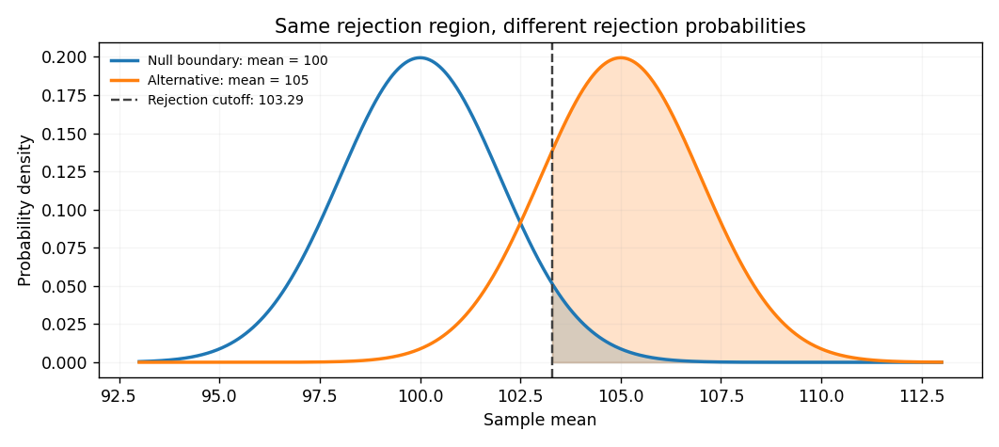
Python: reproduce the formula and simulate repeated sampling.
The following simulation draws entire studies from a model with known \(\sigma\). Simulating \(\overline{X}\) directly is legitimate here, because its distribution has just been derived. Compare the empirical rejection frequencies under \(\mu=100\) and \(\mu=105\) to the theoretical probabilities of \(0.05\) and \(0.80376\).
import numpy as np
from scipy.stats import norm
rng = np.random.default_rng(2026)
mu_0, sigma, n, alpha = 100, 10, 25, 0.05
standard_error = sigma / np.sqrt(n)
cutoff = mu_0 + norm.isf(alpha) * standard_error
# Repeat the entire sampling procedure many times under each true mean.
B = 100_000
means_under_null = rng.normal(100, standard_error, size=B)
means_under_alternative = rng.normal(105, standard_error, size=B)
empirical_alpha = np.mean(means_under_null > cutoff)
empirical_power = np.mean(means_under_alternative > cutoff)
theoretical_power = norm.sf((cutoff - 105) / standard_error)
print(f"Critical sample mean: {cutoff:.4f}")
print(f"Empirical type I error: {empirical_alpha:.4f} (target: 0.0500)")
print(f"Empirical power at mu=105: {empirical_power:.4f}")
print(f"Theoretical power: {theoretical_power:.4f}")
# Optional: visualise the two sampling distributions.
import matplotlib.pyplot as plt
x = np.linspace(92, 113, 500)
plt.plot(x, norm.pdf(x, loc=100, scale=standard_error), label="H0: mu = 100")
plt.plot(x, norm.pdf(x, loc=105, scale=standard_error), label="mu = 105")
plt.axvline(cutoff, linestyle="--", label="Reject if sample mean exceeds cutoff")
plt.xlabel("Sample mean")
plt.ylabel("Probability density")
plt.legend()
plt.show()Monte Carlo proportions vary slightly from run to run; the fixed random seed makes the example reproducible. If we drew each individual observation and then averaged groups of 25, we would obtain the same sampling distribution, but with more computation. Neither simulation replaces checking that a real dataset satisfies the intended model and study-design assumptions.
How \(\alpha\), sample size, variability, and effect size influence power.
There is an important trade-off when the test and sample size are kept fixed: expanding the rejection region makes type I errors more frequent but increases the chance of detecting a given alternative. For our normal-mean example (true mean \(105\), \(n=25\), \(\sigma=10\)):
| Nominal \(\alpha\) | Power at \(\mu=105\) | Type II error at \(\mu=105\) |
| \(0.01\) | \(0.5689\) | \(0.4311\) |
| \(0.05\) | \(0.8038\) | \(0.1962\) |
| \(0.10\) | \(0.8885\) | \(0.1115\) |
However, a lower significance level does not force lower power in every possible redesign: collecting more data, reducing measurement error, or using a more informative study design can improve power while maintaining the same \(\alpha\). If the true difference remains 5 and \(\sigma=10\), then at \(\alpha=0.05\) this test has power approximately \(0.4424\) for \(n=9\), \(0.6388\) for \(n=16\), \(0.8038\) for \(n=25\), and \(0.9996\) for \(n=100\).
The standardized difference \(d=(\mu-\mu_0)/\sigma\) summarises the size of an effect relative to variability. For \(\mu=105\), \(\mu_0=100\), and \(\sigma=10\), \(d=0.5\). If the same difference were observed in a population with \(\sigma=20\), then \(d=0.25\); because the signal is weaker relative to the noise, substantially more observations would be needed to detect it with the same power. These statements describe our model, not a universal rule for every test.
import numpy as np
import matplotlib.pyplot as plt
from scipy.stats import norm
mu_0, sigma, alpha = 100, 10, 0.05
true_means = np.linspace(96, 110, 200)
for n in [9, 16, 25, 100]:
se = sigma / np.sqrt(n)
power = norm.sf(norm.isf(alpha) - (true_means - mu_0) / se)
plt.plot(true_means, power, label=f"n = {n}")
plt.axhline(0.80, linestyle="--", label="80% power")
plt.axvline(mu_0, linestyle=":", label="Null boundary")
plt.xlabel("True population mean")
plt.ylabel("Probability of rejecting H0")
plt.title("Power functions for the one-sided z-test")
plt.ylim(0, 1.02)
plt.legend()
plt.show()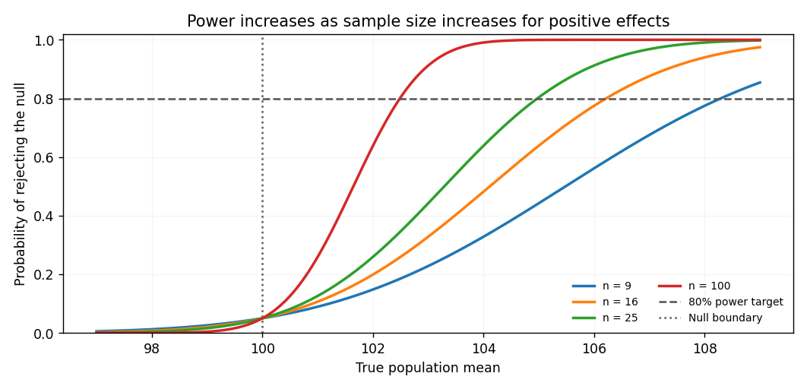
Planning sample size before collecting data.
Power analysis reverses the previous calculation. Instead of asking how much power a given sample provides, we specify the smallest effect worth detecting, the target power, and \(\alpha\), then calculate a suitable sample size. For a right-tailed normal-mean test with known \(\sigma\), a positive target difference \(\delta=\mu_1-\mu_0>0\), and target power \(1-\beta\), solving the power equation yields \[ n\geq\left( \frac{\sigma\left[z_{1-\alpha}+z_{1-\beta}\right]}{\delta} \right)^2. \] This is exact for the stated normal model when we use the continuous normal critical value, aside from rounding \(n\) up to a whole number. It applies to this one-sided known-variance problem; other tests require their own sample-size formulas or numerical power calculations.
For example, suppose we want to detect a change from \(100\) to \(105\), with \(\sigma=10\), \(\alpha=0.05\), and at least \(80\%\) power. We use \(z_{0.95}\approx1.64485\) and \(z_{0.80}\approx0.84162\): \[ n\geq\left(\frac{10(1.64485+0.84162)}{5}\right)^2 \approx24.73. \] We therefore need at least \(n=25\) independent observations under these assumptions. A two-sided test typically requires a larger sample for the same targeted difference, because its rejection probability is allocated to both tails.
In practice, the population standard deviation is usually unknown. The
statsmodels library provides power and sample-size calculations for Student's
t-tests using their noncentral t-distribution. Here is a related
two-sided one-sample t-test calculation at standardized effect \(d=0.5\), target power
\(0.8\), and \(\alpha=0.05\). Unlike the previous known-\(\sigma\) z-test, this example
estimates variability from the sample.
import math
from scipy.stats import norm
from statsmodels.stats.power import TTestPower
# Known-sigma one-sided z-test: analytical sample size.
alpha, target_power = 0.05, 0.80
sigma, delta = 10, 5
n_z = ((norm.isf(alpha) + norm.ppf(target_power)) * sigma / delta) ** 2
print("One-sided z-test, required n:", math.ceil(n_z)) # 25
# Two-sided one-sample t-test: numerical noncentral-t power analysis.
analysis = TTestPower()
n_t = analysis.solve_power(
effect_size=0.5,
nobs=None,
alpha=0.05,
power=0.80,
alternative="two-sided",
)
n_t_integer = math.ceil(n_t)
print("Two-sided t-test, required n:", n_t_integer) # 34
print("Power after rounding up:", round(analysis.power(
effect_size=0.5,
nobs=n_t_integer,
alpha=0.05,
alternative="two-sided",
), 4))We round the calculated sample size up; in this example the t-test requires \(34\) observations. This is a model-based planning result, not a guarantee of significant results in an individual study. We should also plan for missing observations, clustering, departures from assumptions, and uncertainty in the estimated effect size. Estimating the effect from a very small pilot study can lead to highly unstable sample-size targets.
Statistical significance versus practical significance.
A finding is called statistically significant at level \(\alpha\) when the chosen test rejects \(H_0\) at that level. But statistical significance answers a different question from practical importance: even a very small difference can be detected with a large enough sample.
Example: an extremely small but statistically detectable effect.
Suppose a normal population has known standard deviation \(\sigma=1\), and a sample of \(n=10\,000\) has observed mean \(\overline{x}=0.05\). To test \(H_0:\mu=0\) against \(H_1:\mu\neq0\), we calculate \[ z=\frac{0.05-0}{1/\sqrt{10\,000}}=5, \qquad p=2[1-\Phi(5)]\approx5.73\times10^{-7}. \] The result is strongly significant, but the standardized difference from the benchmark is only \(0.05\) standard deviations. Depending on the application, this may be too small to matter in practice. A corresponding \(95\%\) confidence interval is \[ 0.05\pm1.96(0.01)\approx(0.0304,0.0696). \] Reporting an effect estimate and its uncertainty is far more informative than reporting significance alone. What effect size counts as important must be justified in the application's actual units, not decided from a p-value.
Why a 5% significance level does not mean 5% of significant results are false.
The level \(\alpha\) concerns the probability of rejecting \(H_0\) given that it is true. It is not the fraction of significant findings that come from true nulls. To see the distinction, imagine \(1000\) unrelated studies following the same error rules. Suppose \(900\) genuinely have no effect, while \(100\) genuinely have an effect; the test has \(\alpha=0.05\) for each true null and power \(0.80\) for each effect of interest.
Among the \(900\) true nulls, we expect \(900(0.05)=45\) false rejections. Among the \(100\) real effects, we expect \(100(0.80)=80\) correct rejections. The expected-count ratio \(45/(45+80)=0.36\) illustrates that a collection of significant findings can contain a considerable proportion of false positives even though each test is conducted at the 5% level. It is an illustrative ratio of expected counts, not an exact probability for any particular result or an expectation of the realised false-discovery proportion.
The issue becomes more severe when we perform many tests and report only the significant ones. If all 20 null hypotheses are true and the 20 tests are independent, each with size \(0.05\), then \[ P(\text{at least one false rejection}) =1-(1-0.05)^{20}\approx0.6415. \] We will later examine methods such as the Bonferroni correction and false-discovery-rate procedures, which address multiple-testing questions. Independence is needed for this exact \(0.6415\) calculation; it is not required for the basic definition of type I error.
Common interpretation errors and checks before using these results.
- Non-rejection is not proof: failing to reject a null hypothesis is not the same as showing that its claim is true. A low-powered study may simply miss an important effect.
- Power must specify an alternative: reporting only “the power is 80%” is incomplete unless we say which effect size, model, test, and sample size are meant.
- Significance is not a posterior probability: neither \(\alpha\) nor a p-value states \(P(H_0\mid\text{data})\).
- Study design matters: the calculations above assume independent observations and a correctly specified probability model. Selection bias, correlated data, and missingness can invalidate a naive calculation.
- Plan before inspecting outcomes: choosing a one-sided direction, significance level, sample size, or analysis only after seeing the result can defeat the intended error control.
- Do not equate significance with causality: even a highly significant observational association may be confounded and need not represent a causal effect.
Exercises with solutions for self-checking.
Exercise 1. A test rejects \(H_0\) when \(X\geq9\), where \(X\sim\operatorname{Binomial}(10,p)\). Calculate the false-positive rate when \(p=0.5\), and the power when \(p=0.8\). Solution: \(11/1024\approx0.01074\) and \(0.37581\), respectively.
Exercise 2. Suppose a level-\(0.05\) test has power \(0.90\) at some specific alternative. What is the probability of a type II error at that alternative? Solution: \(\beta=1-0.90=0.10\). The false-positive probability is at most \(0.05\) under the null, not \(0.10\).
Exercise 3. For the normal-mean example with \(\mu_0=100\), \(\sigma=10\), \(n=25\), and \(\alpha=0.05\), what is the power when \(\mu=102\)? Solution: \(1-\Phi(1.64485-1)\approx0.2595\). Therefore a genuine increase of 2 units would be missed in about \(74\%\) of repeated studies.
Exercise 4. Why is \(n=24\) insufficient for the planned 80%-power normal test with \(\delta=5\), \(\sigma=10\), and \(\alpha=0.05\)? Solution: the continuous sample-size requirement is about \(24.73\). We must round upward to \(25\); rounding to \(24\) would give power below the specified target.
Further reading and Python documentation.
The theoretical framework follows DeGroot and Schervish, Probability and Statistics (4th ed.), Chapter 9, especially Section 9.1; and the introductory treatment in OpenIntro Statistics (4th ed.), Chapter 5, especially Section 5.3. For further mathematical details, including power functions and tests of normal means, consult Random Services: Hypothesis Testing — Introduction and Tests in the Normal Model. The SOGA-Py discussion of type I and type II errors provides a complementary practical introduction. Documentation for the Python methods used here is available from SciPy and statsmodels.
Critical Value and the p-Value
Once we have specified a null hypothesis \(H_0\), an alternative hypothesis \(H_1\), and an appropriate test statistic, we still need a rule for deciding whether the observed data provide sufficient evidence against \(H_0\). There are two closely related approaches: the critical-value approach, which compares the observed test statistic with a rejection region, and the p-value approach, which measures how incompatible the observed statistic is with the distribution assumed under \(H_0\). Both approaches rely on the null distribution of the test statistic.
The test statistic and its null distribution.
Let \(X=(X_1,\ldots,X_n)\) denote our random sample and let \(T=T(X)\) be a test statistic. Unlike an unknown population parameter, \(T\) is calculated entirely from the sample and therefore has a probability distribution. Its observed value, which we shall denote by \(t_{\mathrm{obs}}\), is a number. The null distribution is the distribution that \(T\) would have if \(H_0\) were true. It is this distribution, rather than the raw observations considered individually, against which we compare \(t_{\mathrm{obs}}\).
For example, suppose \(X_1,\ldots,X_n\) are independent observations from a normal distribution with unknown mean \(\mu\) and known population standard deviation \(\sigma>0\). To test \(H_0:\mu=\mu_0\), consider the statistic \[ Z=\frac{\bar X-\mu_0}{\sigma/\sqrt n}. \] Under \(H_0\), the statistic \(Z\) follows the standard normal distribution \(N(0,1)\). This is an exact result under the stated assumptions; it is not a claim that the original observations themselves are standard normal. We shall examine this test in much more detail in the next section.
Worked example: constructing an observed test statistic. Suppose \(n=25\), the hypothesized population mean is \(\mu_0=50\), the known population standard deviation is \(\sigma=10\), and the observed sample mean is \(\bar x=54.2\). The observed standardized statistic is \[ z_{\mathrm{obs}} =\frac{54.2-50}{10/\sqrt{25}} =\frac{4.2}{2} =2.10. \] A value of \(2.10\) means that the sample mean is \(2.10\) standard errors above its hypothesized mean. Whether we reject \(H_0\) depends on the alternative hypothesis and our chosen significance level, not merely on the fact that \(z_{\mathrm{obs}}\) is positive.
Critical values and rejection regions.
In the critical-value approach, we determine the set of test-statistic values that would lead us to reject the null hypothesis. This is the rejection region or critical region. Its boundary is a critical value. Critical values are chosen from the null distribution so that the probability of falling in the rejection region when \(H_0\) is true is no greater than our specified significance level \(\alpha\). For a simple null hypothesis and a continuous distribution, we can often make this probability exactly equal to \(\alpha\).
Recall that the cumulative distribution function (CDF) is \(F_0(t)=P_0(T\leq t)\), where the subscript \(0\) means that probabilities are calculated under \(H_0\). Its quantile function, written \(F_0^{-1}\), allows us to determine critical values. For the standard normal distribution, we denote its CDF by \(\Phi\) and its quantile function by \(\Phi^{-1}\). In the following examples we use \(\alpha=0.05\).
Right-tailed test.
For an alternative such as \(H_1:\mu>\mu_0\), large positive test statistics provide evidence against \(H_0\). We choose a critical value \(c_R\) satisfying \[ P_0(Z\geq c_R)=\alpha, \qquad c_R=\Phi^{-1}(1-\alpha). \] At the \(5\%\) significance level, \(c_R\approx1.6449\). Thus the rejection region is \(R_{0.05}=\{z:z\geq1.6449\}\). Our observed value \(z_{\mathrm{obs}}=2.10\) lies inside this region, so we reject \(H_0\) for the right-tailed alternative.
Left-tailed test.
For an alternative such as \(H_1:\mu<\mu_0\), unusually small test statistics provide evidence against \(H_0\). The critical value \(c_L\) is chosen so that \[ P_0(Z\leq c_L)=\alpha, \qquad c_L=\Phi^{-1}(\alpha). \] Consequently, \(c_L\approx-1.6449\) and the rejection region is \(R_{0.05}=\{z:z\leq-1.6449\}\). Our previously observed value \(2.10\) does not fall in this region. We therefore fail to reject \(H_0\) for this left-tailed alternative. The direction of the alternative matters.
A second left-tailed example. If we instead observed \(z_{\mathrm{obs}}=-1.80\), the statistic would fall in the left rejection region because \(-1.80<-1.6449\). We would reject \(H_0\) at the \(5\%\) level. This is precisely the result we should expect: an observation well below the hypothesized mean supports a left-tailed, rather than a right-tailed, alternative.
Two-sided test.
For \(H_1:\mu\neq\mu_0\), sufficiently large deviations in either direction provide evidence against \(H_0\). With a symmetric standard normal null distribution, we allocate half the significance level to each tail. The critical values are \[ c_L=\Phi^{-1}(\alpha/2), \qquad c_R=\Phi^{-1}(1-\alpha/2). \] For \(\alpha=0.05\), they are approximately \(-1.9600\) and \(1.9600\). The rejection region is \[ R_{0.05} =\{z:z\leq-1.9600\} \;\cup\; \{z:z\geq1.9600\}. \] Since \(z_{\mathrm{obs}}=2.10>1.9600\), we reject \(H_0\) for the two-sided alternative as well.
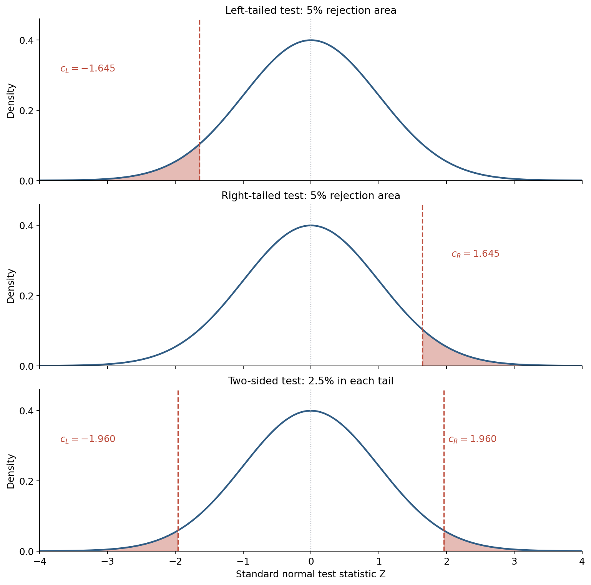
Remark. A two-sided rejection region need not always have symmetric endpoints or split its probability equally between the tails. That construction is natural for a symmetric statistic such as \(Z\), but other tests use asymmetric or discrete distributions and may define extremeness differently. The shape of the rejection region must come from the specified test, not from a memorized diagram.
Computing critical values with Python.
The \(\texttt{scipy.stats}\) module contains the ppf() function, which computes
distribution quantiles. For the upper tail, isf() is the inverse survival function
and can be convenient when the required tail probability is small. The following code reproduces
the critical values above and checks the three decisions for \(z_{\mathrm{obs}}=2.10\).
from scipy.stats import norm
alpha = 0.05
z_obs = 2.10
left_critical = norm.ppf(alpha)
right_critical = norm.isf(alpha)
two_sided_lower = norm.ppf(alpha / 2)
two_sided_upper = norm.isf(alpha / 2)
print(f"Left-tailed critical value: {left_critical:.4f}")
print(f"Right-tailed critical value: {right_critical:.4f}")
print(f"Two-sided critical values: {two_sided_lower:.4f}, {two_sided_upper:.4f}")
print("Reject left-tailed:", z_obs <= left_critical)
print("Reject right-tailed:", z_obs >= right_critical)
print("Reject two-sided:", z_obs <= two_sided_lower or z_obs >= two_sided_upper)
The output gives \(-1.6449\), \(1.6449\), and \((-1.9600,1.9600)\), followed by the decisions
False, True, and True. This agrees with our mathematical
calculations.
The p-value and its formal definition.
Critical values give a yes-or-no decision at a chosen level \(\alpha\), but they do not by themselves tell us how close the observed statistic is to the rejection boundary. A p-value provides a numerical measure of the evidence against \(H_0\), relative to the specified test. It quantifies how extreme the observed test statistic would be if the null model were correct.
We can give a definition that does not depend on which probability distribution we use. Suppose a test is defined for each level \(\alpha\in(0,1)\) by a rejection region \(R_\alpha\), and these rejection regions are nested: smaller values of \(\alpha\) lead to smaller (or equal) rejection regions. For observed data \(x\), define \[ P(x)=\inf\{\alpha\in(0,1):x\in R_\alpha\}. \] Thus, the p-value is the infimum of the significance levels at which these data would lead us to reject \(H_0\). It is often described as the smallest significance level at which the null hypothesis would be rejected. The infimum formulation is more precise in cases where no smallest level is attained; if the observation is not in any of the rejection regions for levels below \(1\), we use the convention that its p-value is \(1\).
For a usual nested family of tests with a valid p-value, the decision rule is \[ \text{Reject }H_0\ \text{if}\ P(x)\leq\alpha; \qquad \text{otherwise, fail to reject }H_0. \] A small p-value means that the observed data fall in rejection regions even for relatively stringent significance levels. A large p-value means that the observed evidence does not meet the chosen threshold. It does not establish that the null hypothesis is true.
Computing p-values as tail probabilities.
For many familiar continuous tests, the p-value can be calculated as a tail probability under the null distribution. Let \(F_0\) be the continuous null CDF, and suppose large positive values of \(T\) favor a right-sided alternative. If we observe \(t_{\mathrm{obs}}\), then \[ p_{\mathrm{right}}=P_0(T\geq t_{\mathrm{obs}}) =1-F_0(t_{\mathrm{obs}}). \] If small values favor a left-sided alternative, the corresponding p-value is \[ p_{\mathrm{left}}=P_0(T\leq t_{\mathrm{obs}}) =F_0(t_{\mathrm{obs}}). \] These formulas express precisely the idea of observing a statistic at least as extreme in the direction specified by \(H_1\).
For a symmetric continuous null distribution centered at zero, a common two-sided test rejects for large values of \(|T|\). Its p-value is \[ p_{\mathrm{two-sided}} =P_0(|T|\geq|t_{\mathrm{obs}}|) =2\min\{F_0(t_{\mathrm{obs}}),\,1-F_0(t_{\mathrm{obs}})\}. \] In the normal case this can be written more simply as \[ p_{\mathrm{two-sided}}=2\bigl[1-\Phi(|z_{\mathrm{obs}}|)\bigr]. \] Important: doubling the smaller tail probability is a shortcut for this symmetric two-sided construction; it is not a universal definition of a two-sided p-value. We will see a discrete counterexample below.
Worked example: three p-values for the same observed statistic. Return to our normal-mean example with \(z_{\mathrm{obs}}=2.10\). For the right-tailed alternative, we obtain \[ p_{\mathrm{right}}=P(Z\geq2.10) =1-\Phi(2.10)\approx0.01786. \] For the left-tailed alternative, we obtain \[ p_{\mathrm{left}}=P(Z\leq2.10) =\Phi(2.10)\approx0.98214. \] Finally, for the two-sided alternative, we obtain \[ p_{\mathrm{two-sided}}=P(|Z|\geq2.10) =2\bigl[1-\Phi(2.10)\bigr]\approx0.03573. \] At \(\alpha=0.05\) we therefore reject the null for the right-tailed and two-sided tests, but not for the left-tailed test, exactly as in the critical-value approach. This example also shows why we must specify the alternative hypothesis before examining the result: choosing its direction afterward would invalidate the intended error control.
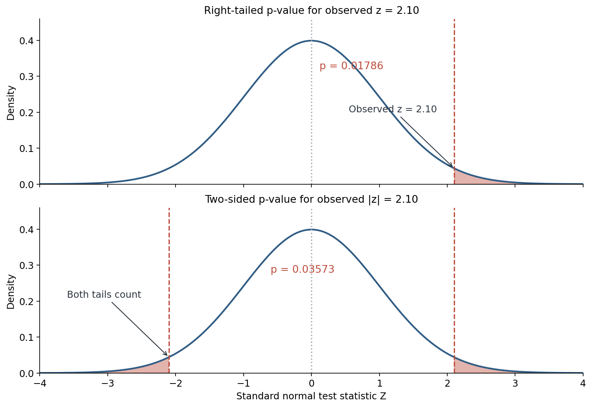
Computing p-values with Python.
In SciPy, cdf() gives the lower-tail probability, while sf() gives the
survival function, or upper-tail probability. Using sf() is generally preferable to
manually evaluating 1 - cdf() when the upper-tail probability is very small,
because subtraction can lose numerical precision. We can reproduce our three p-values as
follows.
from scipy.stats import norm
z_obs = 2.10
alpha = 0.05
p_left = norm.cdf(z_obs)
p_right = norm.sf(z_obs)
p_two_sided = 2 * norm.sf(abs(z_obs))
for name, p_value in [
("Left-tailed", p_left),
("Right-tailed", p_right),
("Two-sided", p_two_sided),
]:
decision = "Reject H0" if p_value <= alpha else "Fail to reject H0"
print(f"{name:12s}: p = {p_value:.5f} ({decision})")Why do the two approaches agree?
For the right-tailed standard normal test, we reject by the critical-value approach if \(z_{\mathrm{obs}}\geq\Phi^{-1}(1-\alpha)\). Because \(\Phi\) is increasing, this is equivalent to \[ \Phi(z_{\mathrm{obs}})\geq1-\alpha \quad\Longleftrightarrow\quad 1-\Phi(z_{\mathrm{obs}})\leq\alpha \quad\Longleftrightarrow\quad p_{\mathrm{right}}\leq\alpha. \] Thus the critical-value and p-value approaches are two ways of expressing the same rejection rule. The same argument applies to left-tailed and two-sided normal tests, with their respective rejection regions.
Example: changing the significance level. For the observed two-sided p-value \(p\approx0.03573\), we reject \(H_0\) at the \(5\%\) or \(10\%\) significance level, but not at the \(1\%\) level. The data have not changed; only the evidential threshold has. In a well-designed study, \(\alpha\) should normally be chosen before the data are examined.
Other null distributions: Student's t, chi-square, and F.
The basic principle remains unchanged when the test statistic does not follow a standard normal distribution. We still find critical values from its null distribution and compute the appropriate tail probability. However, the relevant distribution and the definition of an extreme outcome depend on the test. In particular, the chi-square and F distributions are asymmetric and take only nonnegative values.
Worked example: a two-sided Student's t-test. Suppose that a valid test statistic follows Student's t-distribution with \(\nu=9\) degrees of freedom under \(H_0\), and we observe \(t_{\mathrm{obs}}=2.30\). The distribution is symmetric, so \[ p=2P(T_9\geq2.30)\approx0.04700. \] The two-sided critical values at \(\alpha=0.05\) are approximately \(\pm2.2622\). Since \(2.30>2.2622\), we reject \(H_0\) at the \(5\%\) level. This conclusion requires the assumptions justifying the t null distribution; calculating its p-value alone does not validate them.
Worked example: a right-tailed chi-square test. Suppose a chi-square statistic has \(\nu=4\) degrees of freedom under \(H_0\) and its observed value is \(13.28\). In a test that rejects for large chi-square statistics, \[ p=P(\chi^2_4\geq13.28)\approx0.00999. \] The upper \(5\%\) critical value is approximately \(9.4877\), so the observation falls in the rejection region. We reject at \(\alpha=0.05\), and also at \(\alpha=0.01\) because the p-value is approximately \(0.00999\). The direction of this tail applies, for example, to Pearson's chi-square goodness-of-fit test; not every test involving a chi-square variable uses the same tail.
Worked example: a right-tailed F-test. Suppose \(F\) has an F-distribution with numerator degrees of freedom \(5\) and denominator degrees of freedom \(10\) under \(H_0\). If \(f_{\mathrm{obs}}=3.50\), then \[ p=P(F_{5,10}\geq3.50)\approx0.04349. \] The right-tail \(5\%\) critical value is approximately \(3.3258\). Therefore, we reject at the \(5\%\) level. This right-tail construction is typical of an overall ANOVA F-test. Tests comparing two population variances may have different, including two-sided, rejection rules.
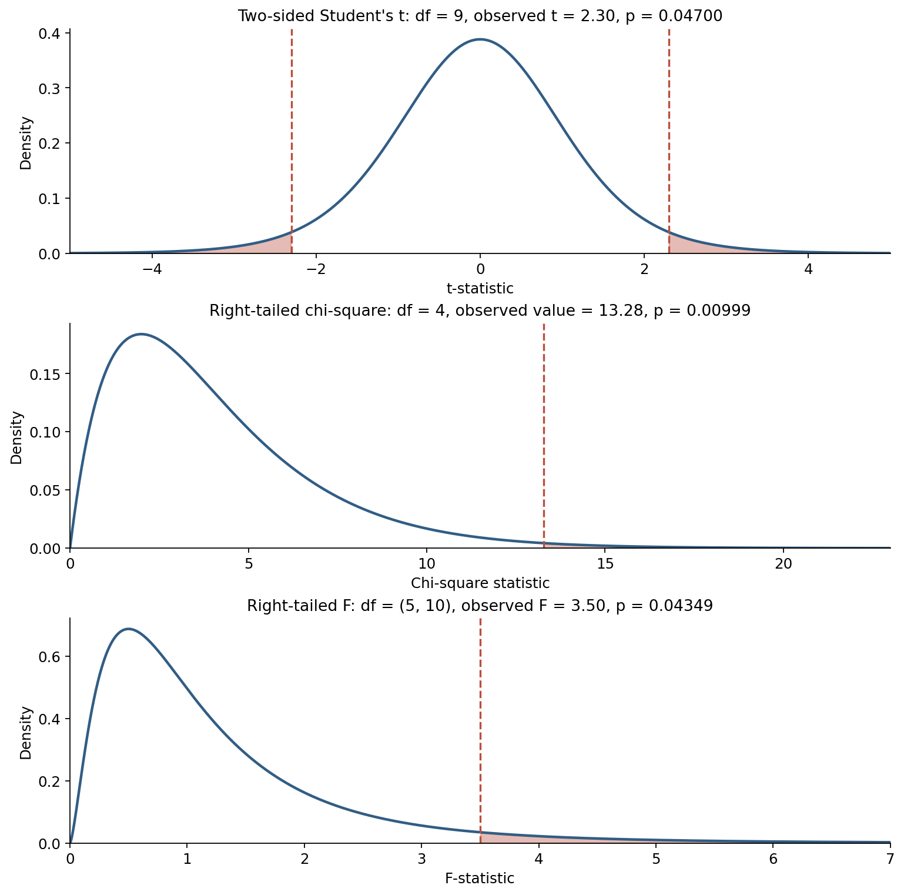
We can verify all three calculations using SciPy. The degrees-of-freedom arguments are essential: a numerical statistic by itself is not enough to determine its p-value.
from scipy.stats import t, chi2, f
alpha = 0.05
# Two-sided Student's t-test, 9 degrees of freedom
t_obs, df = 2.30, 9
t_p = 2 * t.sf(abs(t_obs), df)
t_critical = t.isf(alpha / 2, df)
# Right-tailed chi-square test, 4 degrees of freedom
chi_obs, chi_df = 13.28, 4
chi_p = chi2.sf(chi_obs, chi_df)
chi_critical = chi2.isf(alpha, chi_df)
# Right-tailed F-test, degrees of freedom (5, 10)
f_obs, df_num, df_den = 3.50, 5, 10
f_p = f.sf(f_obs, df_num, df_den)
f_critical = f.isf(alpha, df_num, df_den)
print(f"t: p={t_p:.5f}, upper critical={t_critical:.4f}")
print(f"chi2: p={chi_p:.5f}, upper critical={chi_critical:.4f}")
print(f"F: p={f_p:.5f}, upper critical={f_critical:.4f}")Discrete test statistics: a useful counterexample.
With a discrete distribution, we cannot always construct a non-randomized rejection region whose probability under \(H_0\) is exactly \(\alpha\). Consider \(10\) independent fair coin tosses and let \(X\) be the number of heads. Under \(H_0:p=0.5\), we have \(X\sim\operatorname{Bin}(10,0.5)\). Suppose our alternative is \(H_1:p>0.5\), so large numbers of heads favor the alternative.
If our rejection rule is \(X\geq8\), the probability of rejecting under the fair-coin model is \[ P_{0.5}(X\geq8) =\frac{\binom{10}{8}+\binom{10}{9}+\binom{10}{10}}{2^{10}} =\frac{56}{1024} \approx0.05469. \] This rule exceeds a prescribed \(5\%\) significance level. If instead we require \(X\geq9\), we obtain \[ P_{0.5}(X\geq9) =\frac{\binom{10}{9}+\binom{10}{10}}{2^{10}} =\frac{11}{1024} \approx0.01074. \] Thus, for a non-randomized right-tailed test at level \(0.05\), the rejection region is \(\{9,10\}\), and its actual size is approximately \(1.07\%\), not exactly \(5\%\).
Suppose the coin is tossed \(10\) times and \(8\) heads are observed. The right-tailed p-value is \(P_{0.5}(X\geq8)\approx0.05469\), so we fail to reject at the \(5\%\) level. If instead \(9\) heads are observed, the p-value is \(P_{0.5}(X\geq9)\approx0.01074\) and we reject. Notice that two neighboring possible observations can produce a noticeable jump in their p-values because no intermediate outcome is possible.
Two-sided binomial example. What if we observed \(8\) heads and instead tested \(H_1:p\neq0.5\)? In this symmetric fair-coin case, the exact two-sided p-value is \[ p=P_{0.5}(X\leq2)+P_{0.5}(X\geq8) =2\cdot\frac{56}{1024} =0.109375. \] This calculation works because the binomial probabilities are symmetric around \(5\) when \(p=0.5\). For an asymmetric binomial null model, a common exact two-sided test instead sums probabilities of all outcomes having probability no greater than that of the observed outcome. It need not equal twice the smaller one-sided tail probability. The specification of the test determines what counts as "at least as extreme."
from scipy.stats import binom, binomtest
n = 10
p0 = 0.5
print("P(X >= 8):", binom.sf(7, n, p0))
print("P(X >= 9):", binom.sf(8, n, p0))
print("Right-sided p-value, 8 heads:",
binomtest(8, n, p0, alternative="greater").pvalue)
print("Two-sided p-value, 8 heads:",
binomtest(8, n, p0, alternative="two-sided").pvalue)
# Use the relevant cumulative tail of a discrete distribution.
# For P(X >= k), binom.sf(k - 1, n, p0) includes X = k.Remark on inequalities. For continuous distributions, writing \(P(T\geq t)\) rather than \(P(T>t)\) does not affect the result, because \(P(T=t)=0\). For a discrete random variable, equality matters: \(P(X\geq8)\) includes the probability of exactly \(8\) successes, whereas \(P(X>8)\) does not. This is one reason to be careful with continuous approximations to exact discrete tests.
The connection with confidence intervals.
A useful relationship connects hypothesis tests with confidence intervals. Under appropriate conditions, a two-sided test of \(H_0:\theta=\theta_0\) at significance level \(\alpha\) rejects exactly when \(\theta_0\) lies outside the corresponding \(100(1-\alpha)\%\) confidence interval. More generally, a confidence set can be constructed by retaining those parameter values that the corresponding tests do not reject. The qualification "corresponding" is important: not every interval method is the inversion of every test.
Worked normal example. Suppose we observe a sample mean \(\bar x=54.5\) from \(n=25\) independent normal observations, the population standard deviation is known to be \(\sigma=10\), and we want to test \(H_0:\mu=50\) against \(H_1:\mu\neq50\) at \(\alpha=0.05\). The observed test statistic is \[ z_{\mathrm{obs}} =\frac{54.5-50}{10/\sqrt{25}} =2.25, \qquad p=2P(Z\geq2.25)\approx0.02445. \] Since \(p<0.05\), we reject \(H_0\).
The corresponding \(95\%\) confidence interval for \(\mu\) is \[ \bar x\pm z_{0.975}\frac{\sigma}{\sqrt n} =54.5\pm1.9600\cdot2 \approx(50.58,\,58.42). \] Because the hypothesized value \(50\) is not inside this interval, the confidence-interval approach reaches the same conclusion. If the interval had included \(50\), we would have failed to reject the matching two-sided test at the \(5\%\) level. The interval additionally communicates a range of parameter values consistent with the observed data under the model, rather than just a binary test decision.
from scipy.stats import norm
sample_mean = 54.5
mu0 = 50
sigma = 10
n = 25
alpha = 0.05
se = sigma / (n ** 0.5)
z_obs = (sample_mean - mu0) / se
p_value = 2 * norm.sf(abs(z_obs))
margin = norm.isf(alpha / 2) * se
confidence_interval = (sample_mean - margin, sample_mean + margin)
print(f"z-statistic: {z_obs:.2f}")
print(f"p-value: {p_value:.5f}")
print("95% confidence interval:",
tuple(round(value, 2) for value in confidence_interval))How are p-values distributed when the null hypothesis is true?
A p-value is itself a random variable before data have been observed. For an exactly calibrated test with a continuous null distribution, its p-value is uniformly distributed on \([0,1]\) under \(H_0\). For our two-sided normal test, \(P=2[1-\Phi(|Z|)]\) when \(Z\sim N(0,1)\). If \(0<u<1\), then \[ \begin{aligned} \mathbb{P}_0(P\leq u) &=\mathbb{P}_0\left(2[1-\Phi(|Z|)]\leq u\right)\\ &=\mathbb{P}_0\left(|Z|\geq\Phi^{-1}(1-u/2)\right)\\ &=2\left[1-\Phi\left(\Phi^{-1}(1-u/2)\right)\right]\\ &=u. \end{aligned} \] Thus, in repeated studies with a true null hypothesis, approximately \(5\%\) of p-values will be at most \(0.05\). This does not imply that any particular observed p-value is the probability that the null hypothesis is false.
For many valid discrete or composite-null tests, the more general calibration property is \[ P_\theta(P\leq u)\leq u \qquad\text{for every }\theta\in\Theta_0\text{ and }0\leq u\leq1. \] Such a p-value is sometimes called super-uniform under the null. The inequality allows for conservative tests like the fair-coin example, whose attainable p-values are discrete rather than uniformly spread over the unit interval.
Python simulation. We can check the continuous normal example by generating \(100{,}000\) independent null test statistics, calculating their two-sided p-values, and drawing a histogram. A roughly flat histogram supports the uniformity result; the proportion below \(0.05\) should be close to \(5\%\), with some Monte Carlo variation.
import numpy as np
import matplotlib.pyplot as plt
from scipy.stats import norm
rng = np.random.default_rng(42)
z_sim = rng.standard_normal(100_000)
p_sim = 2 * norm.sf(np.abs(z_sim))
print("Proportion p <= 0.05:", np.mean(p_sim <= 0.05))
plt.figure(figsize=(8, 4.5))
plt.hist(p_sim, bins=20, density=True, edgecolor="white")
plt.axhline(1, linestyle="--", color="black", label="Uniform density = 1")
plt.xlabel("p-value")
plt.ylabel("Estimated density")
plt.title("Distribution of p-values when the null is true")
plt.legend()
plt.tight_layout()
plt.show()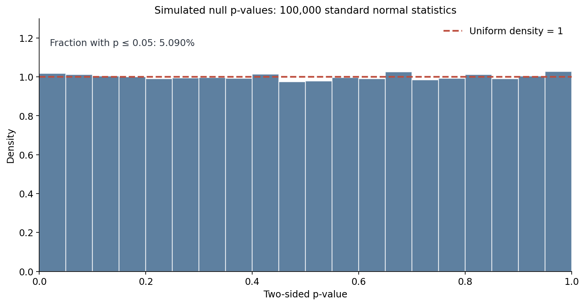
Applying the approach to an actual dataset.
In a real statistical analysis we usually calculate the test statistic and p-value from a column of observations rather than specify them by hand. The following example follows the dataset style used elsewhere in these notes. We load the SOGA-Py students dataset, obtain a sample of nonmissing student weights, and compare its mean with the illustrative benchmark \(70.8\,\mathrm{kg}\) using a two-sided one-sample t-test. Here the population standard deviation is unknown, which is why we use \(\texttt{ttest_1samp}\) rather than the known-variance z-test. The specific t-test assumptions will be discussed in a later section.
import pandas as pd
from scipy import stats
url = "https://userpage.fu-berlin.de/soga/data/raw-data/students.csv"
students = pd.read_csv(url)
weights = students["weight"].dropna()
sample = weights.sample(n=30, random_state=17)
result = stats.ttest_1samp(
sample, popmean=70.8, alternative="two-sided"
)
alpha = 0.05
print("Sample size:", len(sample))
print("Sample mean:", round(sample.mean(), 2))
print("t-statistic:", result.statistic)
print("p-value:", result.pvalue)
print("Decision:", "Reject H0" if result.pvalue <= alpha
else "Fail to reject H0")Interpretation caution. This example demonstrates a reproducible Python workflow, not a scientifically justified comparison of all students with all European adults. A valid population-level conclusion also requires an appropriate sampling design, independence (or a method accounting for dependence), suitable test assumptions, and a meaningful benchmark. Removing missing values and drawing rows at random from a dataset does not by itself establish representativeness of the larger population.
Common mistakes and important qualifications.
- A p-value is not the probability that the null hypothesis is true. It is calculated under a null model and describes the distribution of the chosen statistic. Assigning probabilities to competing hypotheses requires a different framework and additional assumptions.
- A large p-value does not prove the null hypothesis. It means that the test has not provided enough evidence to reject it. A poorly powered study may be unable to detect a meaningful difference.
- A small p-value does not measure the size or importance of an effect. Report the estimated effect, its uncertainty (for example a confidence interval), and its practical relevance wherever possible.
- The p-value depends on the entire testing procedure. Different alternative hypotheses, test statistics, assumptions, and sampling designs can produce different p-values from the same dataset.
- One-sided alternatives should not be selected after looking at the sign of an effect. The direction should be justified in advance. Otherwise the advertised significance level no longer reflects the actual data-dependent procedure.
- Multiple testing and selective reporting change error rates. If we search many variables or perform many tests and report only the smallest p-value, the usual single-test interpretation may be misleading. We will return to multiplicity adjustments in a separate section.
Exercises.
Exercise 1 (standard normal test). Under \(H_0\), let \(Z\sim N(0,1)\), with observed value \(z=-1.80\). Calculate the left-tailed and two-sided p-values and decide whether to reject at \(\alpha=0.05\). Solution: the left-tailed p-value is \(\Phi(-1.80)\approx0.03593\), so we reject. The two-sided p-value is \(2\Phi(-1.80)\approx0.07186\), so we fail to reject.
Exercise 2 (critical values). Find the rejection region for a two-sided standard normal test at \(\alpha=0.01\). Solution: the critical values are \(\Phi^{-1}(0.005)\approx-2.576\) and \(\Phi^{-1}(0.995)\approx2.576\), so we reject if \(|Z|\geq2.576\).
Exercise 3 (exact binomial test). Under \(H_0:p=0.5\), let \(X\sim\operatorname{Bin}(10,0.5)\). Determine the smallest integer \(k\) for which the test "reject when \(X\geq k\)" has size at most \(0.05\). Solution: \(k=9\), because \(P(X\geq8)\approx0.05469>0.05\), whereas \(P(X\geq9)\approx0.01074\leq0.05\).
Exercise 4 (confidence-interval equivalence). A normal sample has \(\bar x=12\), known \(\sigma=4\), and \(n=16\). Test \(H_0:\mu=10\) against \(H_1:\mu\neq10\) at \(\alpha=0.05\) and calculate the corresponding confidence interval. Solution: \(z=(12-10)/(4/4)=2\) and \(p\approx0.04550\), so we reject. The \(95\%\) confidence interval is \(12\pm1.960\cdot1\), or approximately \((10.04,13.96)\), which excludes \(10\).
Exercise 5 (distribution choice). Why is it not valid to calculate the p-value of a test statistic \(T=2.3\) without specifying its null distribution? Solution: the same numerical value can correspond to very different tail probabilities under a standard normal distribution, a Student's t-distribution with few degrees of freedom, or a different statistic's distribution. One must know the statistic, its null law, and what outcomes count as more extreme under the alternative.
References and further reading.
This section develops the approach in DeGroot and Schervish,
Probability and Statistics (4th ed.), Section 9.1; OpenIntro Statistics (4th ed.),
Section 5.3; and
Random Services: Introduction to Hypothesis Testing. For Python functions such as cdf, sf, ppf, and
isf, see the
SciPy probability distribution documentation
and the
SciPy exact binomial test documentation. The numerical examples and exercises above are illustrative worked examples; they are not
presented as examples quoted from those sources.
Inference for One Population Mean with Known Sigma
A one-sample z-test for a population mean examines whether the mean \(\mu\) of a population agrees with a specified value \(\mu_0\), when the population standard deviation \(\sigma>0\) is known independently of the sample being tested. Although this situation is less common than one in which \(\sigma\) must be estimated, it can arise in a stable measurement or manufacturing process with a well-established population variability. The normal-mean model also provides a useful starting point for understanding many other hypothesis tests.
Statistical model and notation.
Let \(X_1,\ldots,X_n\) be independent and identically distributed observations with \(\mathbb{E}(X_i)=\mu\) and \(\operatorname{Var}(X_i)=\sigma^2\), where \(\sigma\) is known. We observe a realization \(x_1,\ldots,x_n\) and calculate the sample mean \(\bar{x}=n^{-1}\sum_{i=1}^n x_i\). The random sample mean is \(\bar X=n^{-1}\sum_{i=1}^n X_i\). Independence implies \[ \mathbb{E}(\bar X)=\mu,\qquad \operatorname{Var}(\bar X) =\frac{1}{n^2}\sum_{i=1}^n\operatorname{Var}(X_i) =\frac{\sigma^2}{n}. \] Thus the standard error of \(\bar X\) is \(\sigma/\sqrt{n}\). It measures how much the sample mean varies across repeated independent samples of size \(n\); it is not the same as the standard deviation \(\sigma\) of individual observations.
If, more specifically, \(X_i\sim N(\mu,\sigma^2)\), then sums of independent normal random variables are normal. Consequently, \[ \bar X\sim N\!\left(\mu,\frac{\sigma^2}{n}\right), \qquad \frac{\bar X-\mu}{\sigma/\sqrt{n}}\sim N(0,1). \] The second statement follows by subtracting the mean and dividing by the standard deviation. Under a null hypothesis \(H_0:\mu=\mu_0\), the z-test statistic therefore has the form \[ Z=\frac{\bar X-\mu_0}{\sigma/\sqrt{n}} \;\overset{H_0}{\sim}\;N(0,1). \] For observed data we write \(z_{\mathrm{obs}}=(\bar x-\mu_0)/(\sigma/\sqrt n)\). A value of \(z_{\mathrm{obs}}=2\), for example, means that the observed sample mean lies two standard errors above the hypothesized mean, not that it lies two population standard deviations above it.
Why normality matters. In the normal population model the result is exact for every \(n\geq 1\). If the observations are independent and identically distributed but not normal, and have finite positive variance, the central limit theorem gives \[ \frac{\sqrt n\,(\bar X-\mu)}{\sigma} \xrightarrow{\,d\,}N(0,1) \quad\text{as }n\to\infty. \] In that case the z-test is only approximately calibrated for sufficiently large samples. There is no universal sample-size threshold: skewness, heavy tails, rare outliers and dependence can make the approximation poor. In particular, the usual central limit theorem does not apply to a Cauchy population, which has no finite mean or variance.
Hypotheses, critical values and p-values.
The null and alternative hypotheses must be specified before inspecting the result. Let \(\Phi\) denote the cumulative distribution function of \(N(0,1)\), and \(z_q=\Phi^{-1}(q)\) its \(q\)-quantile. At significance level \(\alpha\), the standard z-tests are:
| Alternative | Rejection region | p-value |
| Two-sided: \(H_1:\mu\ne\mu_0\) | \(|z_{\mathrm{obs}}|\geq z_{1-\alpha/2}\) | \(2[1-\Phi(|z_{\mathrm{obs}}|)]\) |
| Left-tailed: \(H_1:\mu<\mu_0\) | \(z_{\mathrm{obs}}\leq z_\alpha\) | \(\Phi(z_{\mathrm{obs}})\) |
| Right-tailed: \(H_1:\mu>\mu_0\) | \(z_{\mathrm{obs}}\geq z_{1-\alpha}\) | \(1-\Phi(z_{\mathrm{obs}})\) |
The direction of a test changes its interpretation and its p-value. In a directional test it is mathematically more precise to formulate the null as \(H_0:\mu\leq\mu_0\) against \(H_1:\mu>\mu_0\), or \(H_0:\mu\geq\mu_0\) against \(H_1:\mu<\mu_0\). The boundary \(\mu=\mu_0\) is where the Type I error probability is largest, and it is this boundary distribution that is used to compute the critical value and p-value. In introductory calculations, the shorthand \(H_0:\mu=\mu_0\) is also common.
Worked numerical example: understanding the three alternatives. Suppose \(z_{\mathrm{obs}}=2.50\). The two-sided p-value is \(2[1-\Phi(2.50)]\approx0.01242\), the right-tailed p-value is \(1-\Phi(2.50)\approx0.00621\), and the left-tailed p-value is \(\Phi(2.50)\approx0.99379\). The same sample can support a claim that the mean is higher than \(\mu_0\) but provide no support for a claim that it is lower. The alternative must not be chosen after seeing which direction produces a smaller p-value.
A complete z-test: the weight of manufactured packages.
Suppose a filling machine produces packages whose weights can reasonably be modeled as independent normal observations with a process standard deviation of \(\sigma=12\) grams, established from separate calibration data. We want to investigate whether the current mean is different from its target \(\mu_0=500\) grams. A random sample of \(n=36\) packages has observed mean \(\bar x=505\) grams. These numbers constitute a hypothetical example; we are not claiming to have observed a particular factory.
Step 1 — Formulate the hypotheses. Since deviations on either side of the target are important, we choose a two-sided test: \(H_0:\mu=500\) versus \(H_1:\mu\ne500\). Set \(\alpha=0.05\) before looking at the sample.
Step 2 — Calculate the standard error and statistic. \[ \operatorname{SE}(\bar X)=\frac{12}{\sqrt{36}}=2\ \text{g}, \qquad z_{\mathrm{obs}}=\frac{505-500}{2}=2.50. \] Under \(H_0\), an observed mean this far from 500 grams is unusual relative to the standard error of 2 grams.
Step 3 — Critical-value approach. The critical values at the 5% level are \(\pm z_{0.975}\approx\pm1.960\). Equivalently, we reject whenever the observed mean falls outside \[ \left[500-1.960\cdot2,\;500+1.960\cdot2\right] \approx[496.08,503.92]\ \text{g}. \] Since \(505>503.92\), we reject \(H_0\).
Step 4 — p-value approach. By symmetry of the normal distribution, \[ p=\mathbb{P}_{H_0}(|Z|\geq2.50) =2\,[1-\Phi(2.50)] \approx0.01242. \] Since \(p<0.05\), the p-value approach gives the same decision. The data provide evidence that the current process mean differs from 500 grams, assuming the stated sampling model and independently known process variation. The test does not say that the probability that \(H_0\) is true is 1.242%.
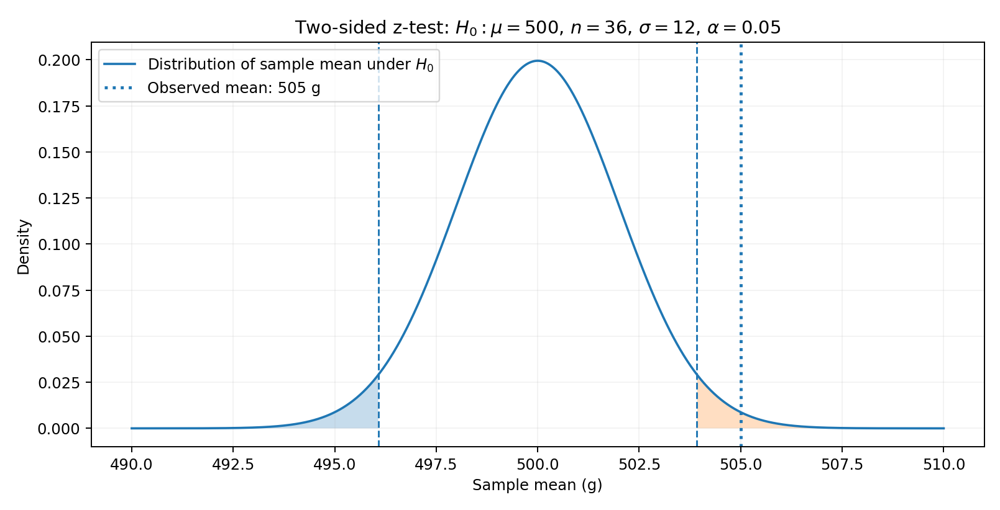
Step 5 — Quantify the size of the departure. The estimated mean difference is \(\bar x-\mu_0=5\) grams. A two-sided 95% confidence interval for \(\mu\) is \[ \bar x\pm z_{0.975}\frac{\sigma}{\sqrt n} =505\pm1.960\cdot2 \approx[501.08,508.92]\ \text{g}. \] Since 500 grams is outside this interval, the corresponding two-sided 5% hypothesis test rejects \(H_0\). Whether a mean departure of roughly five grams is important for production depends on engineering tolerances and costs; a small p-value does not settle that question.
What if the question had been one-sided? Had we specified \(H_1:\mu>500\) in advance, the right-tailed critical value would be \(z_{0.95}\approx1.645\) and the p-value would be \(1-\Phi(2.50)\approx0.00621\). But this test would not establish that the mean differs in either direction. A lower mean might also matter in practice, which is a good reason to use the two-sided formulation here.
Python: calculating the test from summary statistics.
Since the z-test uses only \(\bar x\), \(\mu_0\), \(\sigma\) and \(n\), we do not need the
individual observations to perform this particular calculation. SciPy supplies the normal CDF
(norm.cdf), upper-tail survival function (norm.sf) and quantile
function (norm.ppf).
sf is preferable to subtracting cdf from 1 when the tail probability
is very small.
import numpy as np
from scipy.stats import norm
mu_0 = 500.0
sigma = 12.0 # Assumed known from independent calibration
n = 36
x_bar = 505.0
alpha = 0.05
se = sigma / np.sqrt(n)
z = (x_bar - mu_0) / se
p_two_sided = 2 * norm.sf(abs(z))
p_right = norm.sf(z)
p_left = norm.cdf(z)
critical_z = norm.ppf(1 - alpha / 2)
critical_low = mu_0 - critical_z * se
critical_high = mu_0 + critical_z * se
confidence_interval = (
x_bar - critical_z * se,
x_bar + critical_z * se,
)
print(f"Standard error: {se:.3f}")
print(f"z-statistic: {z:.3f}")
print(f"Two-sided p-value: {p_two_sided:.6f}")
print(f"Left-tailed p-value: {p_left:.6f}")
print(f"Right-tailed p-value: {p_right:.6f}")
print(f"Rejection if x_bar < {critical_low:.3f} or x_bar > {critical_high:.3f}")
print(f"95% CI: ({confidence_interval[0]:.3f}, {confidence_interval[1]:.3f})")
print("Reject H0:", p_two_sided <= alpha)The output is \(\operatorname{SE}=2.000\), \(z=2.500\), two-sided p-value \(0.012419\), right-tailed p-value \(0.006210\), left-tailed p-value \(0.993790\), and 95% confidence interval \((501.080,508.920)\) grams (rounded to three decimal places). We reject the two-sided null at the 5% level.
A second example: a left-tailed test.
Suppose \(X_i\sim N(\mu,8^2)\) independently, and we want to test \(H_0:\mu\geq40\) against \(H_1:\mu<40\). A sample of \(n=64\) has \(\bar x=38\). Here \[ z_{\mathrm{obs}}=\frac{38-40}{8/\sqrt{64}}=-2, \qquad p=\Phi(-2)\approx0.02275. \] Since \(-2<-1.645\), we reject at \(\alpha=0.05\), providing evidence for a mean below 40. If the alternative had instead been two-sided, the p-value would be \(2\Phi(-2)\approx0.04550\), also significant at 5% but not at 1%. Note that the sign of the statistic matters for a one-sided test.
A third example: a small sample with an exactly normal population.
Consider four independent observations \(11,12,13,12\) from a normal population with known \(\sigma=2\). We test \(H_0:\mu=10\) against \(H_1:\mu\ne10\). Although \(n=4\) is small, a normal-population z-test is exact: \[ \bar x=\frac{11+12+13+12}{4}=12, \qquad z_{\mathrm{obs}}=\frac{12-10}{2/\sqrt4}=2, \qquad p=2[1-\Phi(2)]\approx0.04550. \] We reject at 5%. A 95% confidence interval is \(12\pm1.960\cdot1\approx[10.04,13.96]\), which narrowly excludes 10. The conclusion relies heavily on the assumed normal population and known \(\sigma\); a sample of four observations cannot establish either assumption.
import numpy as np
from scipy.stats import norm
observations = np.array([11.0, 12.0, 13.0, 12.0])
mu_0 = 10.0
sigma = 2.0
n = len(observations)
z = (observations.mean() - mu_0) / (sigma / np.sqrt(n))
p_value = 2 * norm.sf(abs(z))
print(z, p_value) # 2.0, approximately 0.0455Assumptions and diagnostic questions.
- Known \(\sigma\). The standard deviation used in the denominator must be justified by information external to the current sample; using its sample standard deviation instead changes the statistical procedure. A historically calibrated value is usable only if it remains credible for the process now being studied.
- Independent sampling. Each observation should contribute genuinely independent information. Repeated measurements on one individual, clustered observations and serially correlated time series do not generally satisfy this assumption. Sampling without replacement from a finite population also introduces dependence; a finite-population correction or a design-based analysis may be needed when the sampling fraction is not negligible.
- Normality or a justified approximation. Exact normal-test calculations require a normal sampling distribution of \(\bar X\), which follows from independent normal observations. If this is not plausible, investigate the data distribution, outliers and whether a CLT approximation is justified. A Q-Q plot and histogram can help diagnose shape, but cannot prove normality, especially for small samples.
- Meaningful target population. Good mathematics does not repair a biased sampling design. A convenient sample of students cannot automatically support conclusions about all European adults or all future students. Missing data, selection effects and changing data-generating processes must also be considered.
Counterexample: using the wrong population standard deviation. Suppose the observations are actually normal with \(\sigma=12\), but we mistakenly conduct a two-sided 5% z-test using \(\sigma_{\mathrm{used}}=8\). Under \(H_0\), the statistic then has standard deviation \(12/8=1.5\), rather than 1. The actual Type I error probability is \[ \mathbb{P}_{H_0}(|Z_{\mathrm{used}}|\geq1.960) =2\left[1-\Phi\!\left(1.960\frac{8}{12}\right)\right] \approx0.1913. \] In other words, a procedure advertised as a 5% test rejects a true null about 19.1% of the time under this misspecified model. Knowledge of \(\sigma\) is not a harmless technicality.
Simulation: checking the nominal false-positive rate.
We can verify the Type I error probability by simulating many datasets under \(H_0\). The simulation uses the correct known \(\sigma=12\) and compares it with the misspecified choice of 8. Since the data are independent and normal, the theoretical false-positive probabilities are 5% and approximately 19.1%.
import numpy as np
from scipy.stats import norm
rng = np.random.default_rng(2026)
repetitions = 50_000
n = 36
mu_0 = 500.0
sigma_true = 12.0
alpha = 0.05
# Under H0, sample means are exactly normal.
means = rng.normal(mu_0, sigma_true / np.sqrt(n), size=repetitions)
cutoff = norm.ppf(1 - alpha / 2)
z_correct = (means - mu_0) / (sigma_true / np.sqrt(n))
z_wrong = (means - mu_0) / (8.0 / np.sqrt(n))
print("Correct sigma:", np.mean(np.abs(z_correct) >= cutoff))
print("Wrong sigma:", np.mean(np.abs(z_wrong) >= cutoff))
print("Theoretical wrong-sigma rate:",
2 * norm.sf(cutoff * 8.0 / sigma_true))The first simulation proportion should be close to \(0.05\), and the second close to \(0.1913\). Small differences across runs are ordinary Monte Carlo sampling error; setting the random seed makes the printed results reproducible.
What if the population is not normal?
To see why sample size matters, imagine independent observations from an exponential distribution with mean 1 and known standard deviation 1. The original population is highly skewed. Nevertheless, the standardized sample mean \(\sqrt{n}(\bar X-1)\) becomes more nearly normal as \(n\) increases. This simulation compares its distribution at \(n=5\) and \(n=50\); the curves would not generally match so closely if the observations had strong dependence or lacked a finite variance.
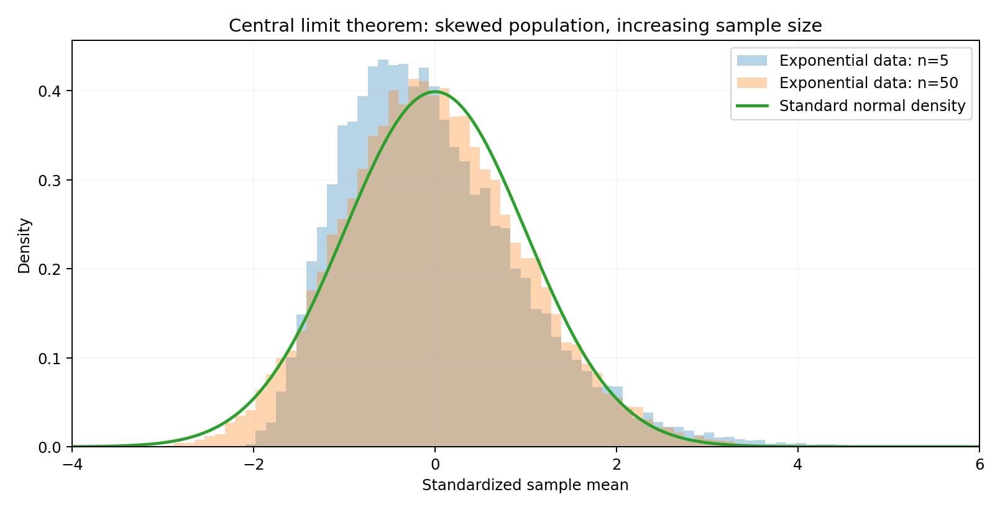
import numpy as np
import matplotlib.pyplot as plt
from scipy.stats import norm
rng = np.random.default_rng(2026)
repetitions = 30_000
for n in (5, 50):
samples = rng.exponential(scale=1.0, size=(repetitions, n))
z = np.sqrt(n) * (samples.mean(axis=1) - 1.0)
plt.hist(z, bins=70, density=True, alpha=0.4, label=f"n={n}")
x = np.linspace(-4, 6, 700)
plt.plot(x, norm.pdf(x), linewidth=2, label="Standard normal")
plt.xlim(-4, 6)
plt.xlabel("Standardized sample mean")
plt.ylabel("Density")
plt.legend()
plt.show()Power and sample-size planning for a z-test.
Under a true mean \(\mu\), the z-test statistic is not centered at zero; rather, \[ Z\sim N\!\left(\delta,1\right),\qquad \delta=\frac{\sqrt n(\mu-\mu_0)}{\sigma}. \] The quantity \(\delta\) is the noncentrality parameter: a true departure of the mean from \(\mu_0\), measured in standard errors. It increases in magnitude when the sample size increases, the true mean moves farther from \(\mu_0\), or the population becomes less variable.
For a two-sided test with critical value \(c=z_{1-\alpha/2}\), its power function is \[ \pi(\mu)=\mathbb{P}_{\mu}(|Z|\geq c) =\Phi(-c-\delta)+1-\Phi(c-\delta). \] To derive this, split the rejection event into its disjoint lower and upper tails: \(\mathbb{P}_{\mu}(Z\leq-c)+\mathbb{P}_{\mu}(Z\geq c)\), and standardize using \(Z-\delta\sim N(0,1)\). When \(\mu=\mu_0\), we have \(\delta=0\) and therefore \(\pi(\mu_0)=\alpha\), as expected.
Worked power example. In the package-weight problem, suppose the true mean is 505 grams while \(\mu_0=500\), \(\sigma=12\), \(n=36\), and \(\alpha=0.05\). Then \(\delta=2.50\), so \[ \pi(505)=\Phi(-1.960-2.50)+1-\Phi(1.960-2.50) \approx0.7054. \] Repeating this experiment many times, the two-sided test would detect this five-gram shift about 70.5% of the time. That is the probability of rejecting the null when the assumed alternative is true; it is not the probability that the alternative is true given this particular dataset.
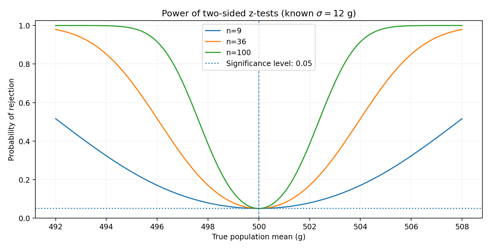
A useful approximate sample-size formula for a two-sided z-test aiming for power \(1-\beta\) against a meaningful shift \(\Delta=|\mu_1-\mu_0|>0\) is \[ n\approx \left(\frac{\sigma\left(z_{1-\alpha/2}+z_{1-\beta}\right)}{\Delta}\right)^2. \] For \(\sigma=12\), \(\Delta=5\), \(\alpha=0.05\) and 80% power, this gives \(n\approx45.21\), suggesting \(n=46\) after rounding up. The exact two-sided normal-model power at \(n=46\) is approximately \(0.8068\). Because the formula neglects the typically tiny opposite-tail rejection probability, always verify the resulting integer sample size using the exact power function.
import numpy as np
from scipy.stats import norm
mu_0 = 500.0
mu_true = 505.0
sigma = 12.0
alpha = 0.05
c = norm.ppf(1 - alpha / 2)
def two_sided_power(n, mu_true, mu_0, sigma, alpha=0.05):
c = norm.ppf(1 - alpha / 2)
delta = np.sqrt(n) * (mu_true - mu_0) / sigma
return norm.cdf(-c - delta) + norm.sf(c - delta)
for n in (9, 36, 46, 100):
print(n, f"{two_sided_power(n, mu_true, mu_0, sigma, alpha):.4f}")
# Smallest integer n with at least 80% exact power.
required_n = next(
n for n in range(2, 1000)
if two_sided_power(n, mu_true, mu_0, sigma, alpha) >= 0.80
)
print("Required sample size:", required_n)The power values for \(n=9,36,46,100\) are approximately \(0.2395,0.7054,0.8068,0.9863\), respectively; the smallest integer sample size reaching at least 80% power is 46 under this model. This calculation assumes that the independent-observation, known-\(\sigma\), normal-model conditions will be credible in the planned study.
Revisiting the original SOGA students example.
Your original notes use the SOGA-Py one-mean z-test example, based on the students dataset. The reported sample mean for 14 students is about 69.82 kg, with a reference value of 70.8 kg. However, the original code obtains \(\sigma\) by calculating the standard deviation of student weights in the dataset. This is a plug-in estimate (or, if the complete recorded dataset is considered a fixed finite population, a descriptive characteristic of that dataset), not a separately known standard deviation for all European adults. Thus the following reproduces the z-shaped calculation for learning purposes, but it does not independently establish the assumptions needed for population inference about European adults.
import numpy as np
import pandas as pd
from scipy.stats import norm
url = "https://userpage.fu-berlin.de/soga/data/raw-data/students.csv"
students = pd.read_csv(url)
# Prepare the population of recorded nonmissing weights first.
weights = students["weight"].dropna()
subsample = weights.sample(n=14, random_state=8)
mu_0 = 70.8
sigma_from_dataset = weights.std(ddof=0)
x_bar = subsample.mean()
n = len(subsample)
z_illustrative = (x_bar - mu_0) / (sigma_from_dataset / np.sqrt(n))
p_illustrative = 2 * norm.sf(abs(z_illustrative))
print("Recorded-data SD:", sigma_from_dataset)
print("Sample mean:", x_bar)
print("Illustrative z:", z_illustrative)
print("Illustrative two-sided p-value:", p_illustrative)
Two details matter. First, if the goal is inference about the student population and its
standard deviation is not independently known, the next section's one-sample t-test
is the appropriate classical starting point under its own assumptions. Second, even a
mathematically perfect test applied to student data would not by itself justify generalizing to
the European adult population. The value 70.8 kg is treated here as the reference figure stated
in the original exercise, not independently verified as a current demographic estimate. The
formula
2 * norm.sf(abs(z)) calculates a correct two-sided normal-tail p-value for
either sign of \(z\); mixing norm.cdf(z) with
norm.sf(abs(z)) works only accidentally for some negative values.
How to report a one-sample z-test.
A useful report names the target parameter and comparison value, the method, the sampling assumptions, the observed effect, the standardized statistic, the p-value, and a confidence interval. For our hypothetical factory example: “Using a two-sided one-sample z-test with a separately calibrated process standard deviation of 12 g, the mean weight of 36 independently sampled packages was 505 g, five grams above the 500 g target. The result was statistically significant (z = 2.50, p = 0.0124); the 95% confidence interval for the mean was [501.08, 508.92] g.” Whether the five-gram deviation is operationally acceptable requires a separate practical judgement.
Exercises with solutions.
Exercise 1 — Derive the statistic. Let \(X_1,\ldots,X_9\) be independent \(N(\mu,16)\) variables. Test \(H_0:\mu=10\) versus \(H_1:\mu>10\) using an observed sample mean of 12 at \(\alpha=0.05\). Derive the null distribution, critical sample-mean cutoff, and p-value.
Solution. The known standard deviation is \(\sigma=4\) and the standard error is \(4/3\). Therefore \[ z_{\mathrm{obs}}=\frac{12-10}{4/3}=1.5, \qquad p=1-\Phi(1.5)\approx0.06681. \] The critical sample mean is \(10+z_{0.95}(4/3)\approx12.193\). Since 12 is below the cutoff, we fail to reject \(H_0\) at 5%.
Exercise 2 — Opposite directions. With \(z_{\mathrm{obs}}=-2.1\), calculate the left-tailed, right-tailed, and two-sided p-values, then state which tests reject at the 5% level.
Solution. The p-values are \(\Phi(-2.1)\approx0.01786\), \(1-\Phi(-2.1)\approx0.98214\), and \(2\Phi(-2.1)\approx0.03573\). We reject in the left-tailed and two-sided cases but not in the right-tailed case.
Exercise 3 — Confidence interval and test. Suppose \(n=25\), \(\bar x=52\), \(\sigma=10\), and \(\mu_0=50\). Construct a 95% confidence interval for \(\mu\), and perform a two-sided 5% z-test.
Solution. The standard error is 2, so the interval is \(52\pm1.960(2)\approx[48.08,55.92]\). Moreover, \(z_{\mathrm{obs}}=1\), giving \(p\approx0.3173\). We fail to reject: the hypothesized mean 50 is inside the interval.
Exercise 4 — The cost of misspecification. Suppose the true known population standard deviation is 15, but you perform a two-sided nominal 5% z-test using 10. Calculate the actual Type I error probability under a normal null model, and explain your result.
Solution. The incorrectly standardized statistic has null standard deviation \(15/10=1.5\). Therefore the actual error probability is \[ 2\left[1-\Phi\!\left(1.960\frac{10}{15}\right)\right] \approx0.1913. \] Underestimating the variability makes results appear more extreme than they are, dramatically inflating the false-positive rate.
Exercise 5 — Design for power. A normal population has known \(\sigma=12\). Plan a two-sided 5% test of \(H_0:\mu=500\) that has at least 80% power when \(\mu=505\). Use the normal approximation for the initial sample-size calculation and check the rounded answer with the exact power function.
Solution. The approximation gives \[ n\approx \left(\frac{12(z_{0.975}+z_{0.80})}{5}\right)^2 \approx45.21. \] Rounding up gives 46. Substituting \(n=46\) into the exact two-sided power function gives approximately 0.8068, exceeding 0.80.
References and further reading.
For the underlying mathematical theory, see DeGroot and Schervish,
Probability and Statistics (4th ed.), Chapter 9 (particularly Sections 9.1–9.2 and 9.4),
and
Random Services: Tests in the Normal Model. For the applied approach and the original student dataset example, see
SOGA-Py: Sigma Is Known
and the corresponding SOGA-R material. OpenIntro Statistics (4th ed.), Chapters 5 and 7,
provides additional discussion of standard errors, significance and inference for quantitative
data. SciPy's
probability distribution documentation
describes cdf, sf and ppf. The factory and numerical
exercises above are newly constructed illustrative examples, not transcriptions from the cited
sources.
Inference for One Population Mean with Unknown Sigma
A hypothesis test for a population mean, when the population standard deviation \(\sigma\) is unknown, is conducted in the same way as if the population standard deviation were known. However, we need to consider the sample standard deviation \(s\) in addition, and the test statistic, denoted by \(t\), is defined as follows: \[t = \frac{\bar{x} - \mu_0}{s / \sqrt{n}}\text{.}\]
This test statistic is called the Student's \(t\)-distribution with \(n-1\) degrees of freedom.
We will again consider the students data set. We will examine the average weight of a
random sample of students and compare it to the average weight of European adults. We will not
showcase the critical value approach. For the p-value approach, we will use the
stats.ttest_1samp() function from the scipy package.
We set the population mean accordingly: \(μ_0=70.8\). Further, we take a random sample
(sample_weights) with a sample size of \(n=9\). The sample consists of the weights
in kg of 9 randomly picked students from the students data set.
>>> import pandas as pd
>>> import numpy as np
>>> students = pd.read_csv("https://userpage.fu-berlin.de/soga/data/raw-data/students.csv")
>>> mu_0 = 70.8
>>> n = 9
>>> sample_weights = students.sample(n, random_state = 9)["weight"]The following code performs a one-sample t-test. The test is two-sided, and the result includes the t-statistic, p-value, and degrees of freedom.
>>> from scipy import stats
>>> test_result = stats.ttest_1samp(sample_weights,
... mu_0,
... alternative = "two-sided")
>>>
>>>
>>> test_result
TtestResult(statistic=np.float64(1.1620080498483334), pvalue=np.float64(0.2787240885983498), df=np.int64(8))We fail to reject the null hypothesis at the \(0.05\) significance level, since the p-value is greater than \(0.05\).
Inference for Two Independent Population Means with Equal Standard Deviations
So far, we have focused on hypothesis tests for one population mean. However, in many applications, we want to compare the means of two or more populations. Therefore, we first need to distinguish between samples from two independent populations and samples from populations that are not independent, which are called paired samples.
We assume that the standard deviations of the two populations are equal but unknown. If, however, the population standard deviation \(\sigma\) were known, the test statistic could be written as follows: \[ z = \frac{(\bar{x}_{1} - \bar{x}_{2}) - (\mu_{1} - \mu_{2})} {\sigma \sqrt{\frac{1}{n_{1}} + \frac{1}{n_{2}}}} \]
In most real-world applications, \(\sigma\) is unknown and must therefore be estimated. A natural approach is to use the sample variances \(s_1^2\) and \(s_2^2\) as estimates of \(\sigma^2\). By pooling these variances and weighting them according to their respective sample sizes, we obtain the following estimate of \(\sigma\): \[ s_{p} = \sqrt{\frac{(n_{1} - 1)s_{1}^{2} + (n_{2} - 1)s_{2}^{2}}{n_{1} + n_{2} - 2}}. \]
The quantity \(s_p\) is called the pooled sample standard deviation, where the subscript \(p\) denotes pooling.
Replacing \(\sigma\) in the test statistic with its estimate \(s_p\) yields: \[ t = \frac{(\bar{x}_{1} - \bar{x}_{2}) - (\mu_{1} - \mu_{2})}{s_{p} \sqrt{\frac{1}{n_{1}} + \frac{1}{n_{2}}}} \]
The denominator of this expression, \(s_p \sqrt{\frac{1}{n_{1}} + \frac{1}{n_{2}}}\), is an estimator of the standard deviation of \(\bar{x}_{1} - \bar{x}_{2}\), which can be written as \(s_{\bar{x}_{1} - \bar{x}_{2}}\).
Note that the test statistic \(t\) follows a t-distribution with degrees of freedom given by: \[ \text{df} = n_{1} + n_{2} - 2. \]
A \(100(1 - \alpha)\%\) confidence interval for \(\mu_{1} - \mu_{2}\) is given by: \[ (\bar{x}_{1} - \bar{x}_{2}) \pm t \cdot s_{p} \sqrt{\frac{1}{n_{1}} + \frac{1}{n_{2}}} \]
Here, the value of \(t\) is obtained from the t-distribution corresponding to the desired confidence level and \(n_{1} + n_{2} - 2\) degrees of freedom.
Python allows us to conduct a pooled t-test using the
ttest_ind_from_stats()
over the stats module from the scipy package.
We will again load the students data set:
>>> import pandas as pd
>>> import numpy as np
>>>
>>> students = pd.read_csv("https://userpage.fu-berlin.de/soga/data/raw-data/students.csv")We will examine the mean annual salary (in Euros) of graduates to determine whether there are statistically significant differences between male and female students. The key question is whether gender influences the mean salary of graduates.
In order to do this we need to first prepare the data. The following code speaks for itself:
>>> graduated_students = students.loc[students.graduated == 1]
>>> males_graduated = graduated_students.loc[students.gender == "Male"]
>>> females_graduated = graduated_students.loc[students.gender == "Female"]
>>>
>>> n = 50
>>>
>>> sample_males = males_graduated.sample(n, random_state = 9)["salary"]
>>> sample_females = females_graduated.sample(n, random_state = 9)["salary"]
>>> print(np.mean(sample_males))
47262.417382791995
>>> print(np.mean(sample_females))
35825.54641661087We test the normaility assumption by plotting a normal probability plot, often referred to as Q-Q plot. If the variable is normally distributed, the normal probability plot should be roughly linear.
We will switch to VS Code to write the following code and display the graph.
# Rest of the code
import matplotlib.pyplot as plt
import scipy.stats as stats
plt.figure(figsize=(12,5))
ax = plt.subplot(1, 2, 1)
qq = stats.probplot(sample_males, dist="norm", plot = plt)
ax.set_title("Q-Q plot for males (sample)")
ax.set_ylabel("Sample quantiles")
ax = plt.subplot(1, 2, 2)
qq = stats.probplot(sample_females, dist="norm", plot = plt)
ax.set_title("Q-Q plot for females (sample)")
ax.set_ylabel("Sample quantiles")
plt.show(block=True)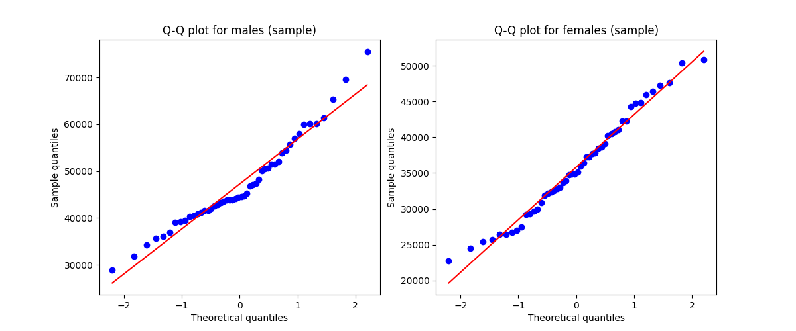
We see that the sample data is somehow noisy, but it is still roughly normally distributed. The deviations from the straight line in the upper and lower parts suggest, that the probability distribution is slightly skewed.
Further, we check if the standard deviations of the two populations are roughly equal. As a rule of thumb, the condition of equal population standard deviations is met, if the ratio of the larger to the smaller sample standard deviation is less than 2 (Weiss, 2010). Let us assume, that the data of the students data set is a good approximation for the population.
>>> print(np.std(sample_males, ddof = 1))
9576.164209488374
>>> print(np.std(sample_females, ddof = 1))
7200.9719569940535
>>> print(np.std(sample_males, ddof = 1) / np.std(sample_females, ddof = 1))
1.3298432859729967The ratio is approximately \(1.33\) and thus, we conclude that the equal population standard deviations criterion is fulfilled. A simple visualization technique for evaluating the spread of a variable is to use a box plot.
# Rest of the code
import seaborn as sns
plt.figure(figsize=(11,5))
sample_df = pd.melt(pd.DataFrame({'male': sample_males.values,
'female': sample_females.values}))
sample_df.columns = ["Gender", "Annual salary in EUR"]
sns.boxplot(x='Gender', y='Annual salary in EUR', data=sample_df).set(title='Sample data')
plt.show(block=True)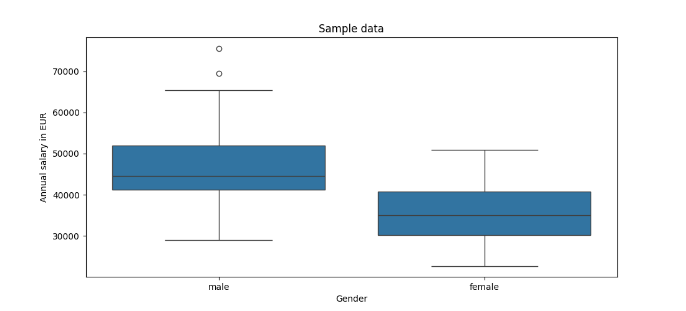
We now conduct the pooled t-test using an already available Python package.
>>> from scipy import stats
>>>
>>> test_result = stats.ttest_ind(sample_males, sample_females,
... equal_var = True,
... alternative = "greater")
>>>
>>> test_result
TtestResult(statistic=np.float64(6.7496330142831065), pvalue=np.float64(5.25205313471519e-10), df=np.float64(98.0))We may conclude that at the 1% significance level, the data provides very strong evidence to conclude that the average salary of male graduates is higher than the average salary of female graduates.
Inference for Two Independent Population Means with Unequal Standard Deviations
In cases where we want to test for two population means and the standard deviations are different between the two populations, the so-called non-pooled t-test, or Welch’s t-test, is applied.
The non-pooled t-test is very similar to the pooled t-test, except for the test statistic \(t\) and the calculation of the degrees of freedom (\(df\)). The test statistic does not use \(s_p\), the pooled standard deviation, and is written as: \[ t = \frac{\bar{x}_{1} - \bar{x}_{2}} {\sqrt{\frac{s^{2}_{1}}{n_{1}} + \frac{s^{2}_{2}}{n_{2}} }} \]
The denominator of the equation above is the estimator of the standard deviation of \(\bar{x}_1 - \bar{x}_2\), denoted \(s_{\bar{x}_1-\bar{x}_2}\).
The test statistic \(t\) has a t-distribution, and the degrees of freedom (df) are given by \[ df=\frac{\left(\frac{s_1^2}{n_1}+\frac{s_2^2}{n_2}\right)^2} {\frac{\left(\frac{s_1^2}{n_1}\right)^2}{n_1-1} +\frac{\left(\frac{s_2^2}{n_2}\right)^2}{n_2-1}} \text{.} \]
The non-pooled t-test is robust to moderate violations of the normal population assumption, but it is less robust to outliers (Weiss, 2010).
The \(100(1-\alpha)\%\) confidence interval for \(\mu_1 - \mu_2\) is given by
\[ (\bar{x}_1 - \bar{x}_2)\; \pm\; t^{\ast} \cdot \sqrt{\frac{s_1^{2}}{n_1} + \frac{s_2^{2}}{n_2}} \]
where the value of t is obtained from the t-distribution for the given confidence level. The degrees of freedom (df) and obtained using the equation above.
In order to illustrate the non-pooled t-test, we examine the mean annual salary (in euros) of female graduates with respect to their major field of study. Specifically, we want to investigate whether there is a statistically significant difference in the mean salaries of two populations: female students majoring in Political Science and female students majoring in Social Sciences.
The following example, written in VS Code, speaks for itself:
female_graduated_students = students.loc[(students.graduated == 1) & (students.gender == "Female")]
political_sc = female_graduated_students.loc[female_graduated_students.major == "Political Science"]
social_sc = female_graduated_students.loc[female_graduated_students.major == "Social Sciences"]
n = 50
sample_polt_sc = political_sc.sample(n, random_state = 9)["salary"]
sample_social_sc = social_sc.sample(n, random_state = 9)["salary"]We check whether the data are normally distributed by plotting a Q–Q plot, as we did before:
plt.figure(figsize=(12,5))
ax = plt.subplot(1, 2, 1)
qq = stats.probplot(sample_polt_sc, dist="norm", plot = plt)
ax.set_title("Q-Q plot for female graduates of \nPolitical Science (sample data)")
ax.set_ylabel("Sample quantiles")
ax = plt.subplot(1, 2, 2)
qq = stats.probplot(sample_social_sc, dist="norm", plot = plt)
ax.set_title("Q-Q plot for female graduates of \nSocial Sciences (sample data)")
ax.set_ylabel("Sample quantiles")
plt.show(block=True)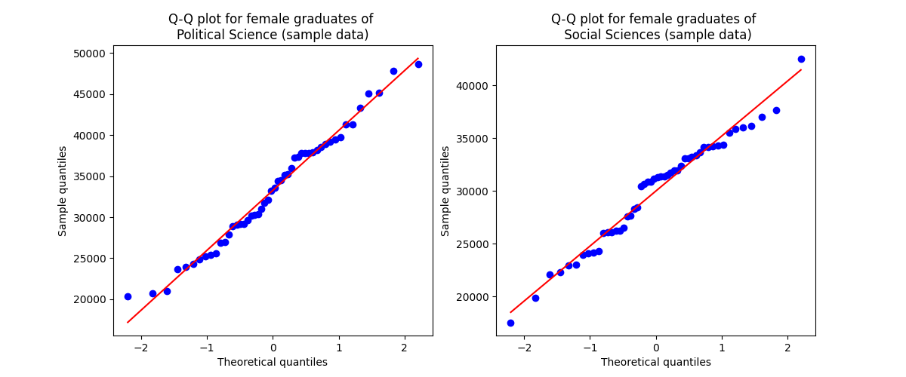
The data from both samples fall mostly along a straight line. Therefore, we assume that the data in the students dataset provide a reasonable approximation to the population. We can then visually assess whether the standard deviations of the two populations differ by plotting a box plot.
sample_polt_sc = political_sc.sample(n, random_state = 9)
sample_social_sc = social_sc.sample(n, random_state = 9)
plt.figure(figsize=(11,5))
df = pd.DataFrame({'salary' : np.concatenate([sample_social_sc["salary"].values, sample_polt_sc["salary"].values]),
'major' : np.concatenate([sample_social_sc["major"].values, sample_polt_sc["major"].values])},
columns = ['salary', 'major'])
sns.boxplot(
data=df,
x="salary",
y="major"
).set(
title='Population data',
xlabel='Annual salary in EUR',
ylabel=''
)
plt.show(block=True)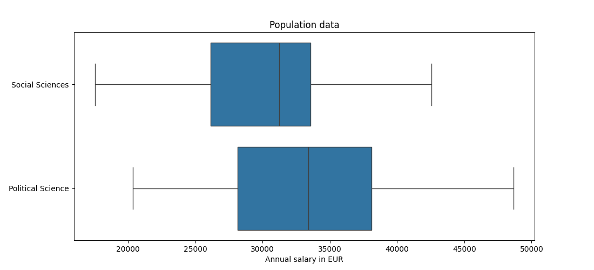
Based on the graphical evaluation, we conclude that the data are roughly normally distributed and that the standard deviations differ from each other.
We now conduct the non-pooled t-test using an existing Python package.
>>> from scipy import stats
>>>
>>> test_result = stats.ttest_ind(sample_polt_sc["salary"], sample_social_sc["salary"], equal_var = False)
>>>
>>> print("t-value:", round(test_result.statistic, 5))
t-value: 2.62318
>>> print("p-value:", round(test_result.pvalue, 5))
p-value: 0.01025Again, we may conclude that, at the 5% significance level, the data provide strong evidence that the average annual salary of female graduates in Political Science differs from the average annual salary of female graduates in Social Sciences.
Inferences for Two Population Means Using Paired Samples
Let us now turn to a hypothesis-testing procedure for the difference between two population means when the samples are dependent. If, for example, two data values are collected from the same source (or element), these are called paired or matched samples.
These procedures are often applied in Before–After–Control–Impact (BACI) analysis. Imagine you are asked to evaluate the effectiveness of a filtering system in removing air pollutants released by a factory. One population consists of air-quality measurements taken before the filtering system is implemented or renewed, and the other population consists of measurements taken after installing the new filter system. In this case, you are dealing with paired samples because both data sets are collected from the same source, i.e., the factory.
In paired samples, the difference between the data values of the two samples is denoted by \(d\), often called the paired difference. Note that the sample size \(n\) for each sample is equal. The mean of the paired differences is denoted by \(\bar{d}\): \[ \bar{d} = \frac{\sum d}{n} \]
The standard deviation of the paired differences, \(s_d\), is calculated as: \[ s_d = \sqrt{\frac{\sum d^{2} - \frac{(\sum d)^{2}}{n}}{n - 1}} \]
Suppose that the paired-difference variable \(d\) is normally distributed. Then the paired t-statistic is expressed as: \[ t = \frac{\bar{d} - (\mu_{1} - \mu_{2})}{\frac{s_d}{\sqrt{n}}} \]
This simplifies to \(t = \frac{\bar{d}}{\frac{s_d}{\sqrt{n}}}\) when \(\mu_{1} - \mu_{2} = 0\). The test statistic \(t\) for paired samples follows a t-distribution with \(n - 1\) degrees of freedom.
The 100(1 − \(\alpha\))% confidence interval for \(\mu_d\) is: \[ \bar{d} \pm t \times \frac{s_d}{\sqrt{n}} \] where the value of \(t\) is obtained from the t-distribution for the given confidence level and \(n - 1\) degrees of freedom.
To demonstrate the paired t-test for dependent samples, we will investigate whether an online statistics learning tutorial helps students improve their grades.
There are two research questions of interest:
1. We want to examine whether the group of students who attended the online statistics tutorial
performed better on the second exam compared to the first exam.
2. We also want to test how the group of students who did not attend the tutorial performed on
both exams.
The following code loads the data and selects the relevant sample.
import pandas as pd
import numpy as np
students = pd.read_csv("https://userpage.fu-berlin.de/soga/data/raw-data/students.csv")
n = 65
subset = students.loc[students["online.tutorial"] == 1]
sample = subset.sample(n, random_state = 9)[["score1", "score2"]]Next, we compute the paired differences, \(d\), and visualize them:
import matplotlib.pyplot as plt
import seaborn as sns
plt.figure(figsize=(9,6))
d = sample["score1"] - sample["score2"]
data = pd.DataFrame({'index' : np.arange(1, 66),
'Paired differences' : d},
columns = ['index', 'Paired differences'])
sns.barplot(data = data, x = "index", y = "Paired differences", color = "darkgrey")
plt.axhline(y = 0, color = "orangered")
ax = plt.gca()
ax.get_xaxis().set_visible(False)
plt.show(block=True)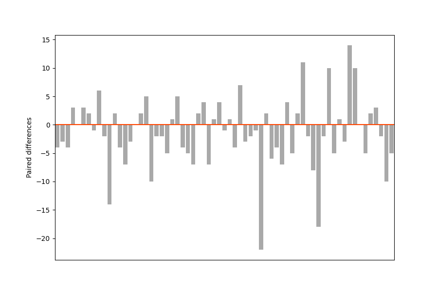
The plot looks as expected: some students performed better on the first exam than on the second, and others performed better on the second exam. To check the normality assumption, we rely on a visual inspection using a Q–Q plot.
import scipy.stats as stats
plt.figure(figsize=(12,5))
fig, ax = plt.subplots()
qq = stats.probplot(d, dist="norm", plot = plt)
ax.set_title("Q–Q plot for differences in exam scores")
ax.set_ylabel("Sample quantiles")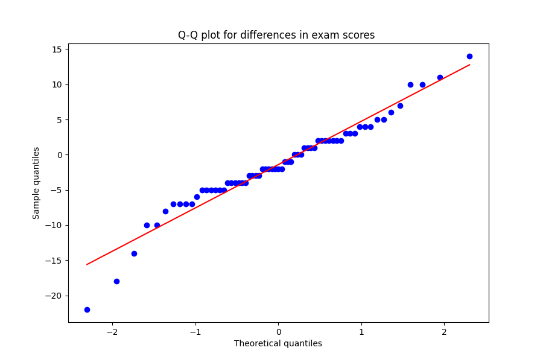
The pattern is somewhat noisy, but the points generally follow the reference line, suggesting that the paired differences are approximately normally distributed.
We now conduct the paired t-test using a Python package.
>>> from scipy import stats
>>>
>>> test_result = stats.ttest_rel(sample["score1"], sample["score2"], alternative = "less")
>>>
>>> print("t-value:", round(test_result.statistic, 5))
t-value: -1.84743
>>> print("p-value:", round(test_result.pvalue, 5))
p-value: 0.03465At the 5% significance level, the data provide sufficient evidence to conclude that students’ exam scores improve after taking the online statistics tutorial.
There is still one research question to be answered: What if there are other reasons for better grades on the second exam? What if the second exam was easier? What if the students simply improved over the semester because of a great lecturer? We test this hypothesis by conducting a paired t-test specifically for those students who did not take the online statistics tutorial.
>>> sample = students.loc[students["online.tutorial"] == 0].dropna().sample(n, random_state = 10)[["score1", "score2"]]
>>>
>>> test_result = stats.ttest_rel(sample["score1"], sample["score2"], alternative = "less")
>>>
>>> print("t-value:", round(test_result.statistic, 5))
t-value: 0.68109
>>> print("p-value:", round(test_result.pvalue, 5))
p-value: 0.75086The p-value is greater than the significance level of 0.05, so we do not reject \(H_0\). The test is not statistically significant and therefore does not provide sufficient evidence against the null hypothesis.
At the 5% significance level, the data do not provide sufficient evidence to conclude that the exam grades of students who did not attend the online tutorial improved.
Inferences for One Population Standard Deviation
So far, we have discussed methods of inferential statistics that focus on making inferences about one or more population means. We will now consider methods of inferential statistics that focus on inferences for population variances (or standard deviations).
The test statistic for a hypothesis test concerning the population standard deviation, with the null hypothesis \(H_0: \sigma = \sigma_0\), for a normally distributed variable is calculated as: \[ \chi^{2} = \frac{(n - 1) s^{2}}{\sigma^{2}_{0}} \text{.} \]
This statistic follows a chi-square distribution, which is why it is denoted by the symbol \(\chi^2\), with \(n - 1\) degrees of freedom.
The \(100(1-\alpha)\%\) confidence interval for \(\sigma\) is given by: \[\sqrt { \frac {n - 1} {\chi^2_{\alpha / 2}}} \le \sigma \le \sqrt { \frac{n - 1} {\chi^2_{1 - \alpha / 2}} }\text{,}\]
where \(n\) is the sample size of the sample data.
It is important to note that the chi-square test for standard deviation is not robust to violations of the normality assumption. If the data is not normally distributed, the results of the test may be unreliable (Weiss, 2010).
In order to showcase the one standard deviation \(\chi^2\)-test, we examine the spread of the height in cm of female students and compare it to the spread of the height of all students (our population). We want to test whether the standard deviation of the height of female students is significantly smaller than the standard deviation of the height of all students.
The following code speaks for itself:
import pandas as pd
import numpy as np
students = pd.read_csv("https://userpage.fu-berlin.de/soga/data/raw-data/students.csv")
sigma_0 = np.std(students["height"], ddof = 1)
n = 30
female_students = students.loc[students.gender == "Female"]
female_height_sample = female_students.sample(n, random_state = 12)["height"]
sample_sd = np.std(female_height_sample, ddof = 1)We check the normality assumption by plotting a Q–Q plot:
import matplotlib.pyplot as plt
import scipy.stats as stats
plt.figure(figsize=(12,5))
fig, ax = plt.subplots()
qq = stats.probplot(female_height_sample, dist="norm", plot = plt)
ax.set_title("Q–Q plot for the heights of\nsampled female students")
ax.set_ylabel("Sample quantiles")
plt.show(block=True)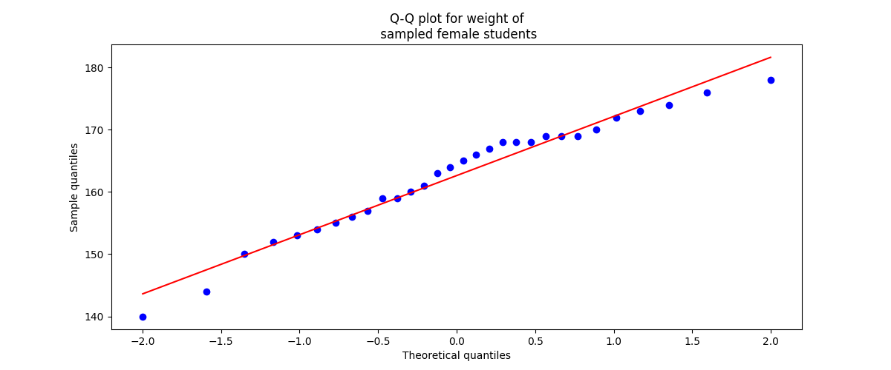
As we can see, the data falls roughly along a straight line. Based on this graphical evaluation, we conclude that the variable of interest is approximately normally distributed.
We now conduct the one–standard-deviation \(\chi^2\) test from scratch in Python. The null hypothesis is \(H_0: \sigma = \sigma_0\), and the alternative hypothesis is \(H_1: \sigma < \sigma_0\). We choose a significance level of \(\alpha=0.05\).
from scipy.stats import chi2
chi_squared_value = ((n - 1) / (sigma_0**2)) * sample_sd**2
print(chi_squared_value)
df = n - 1
p = chi2.cdf(chi_squared_value, df = df)
print(p)Output:
20.44603451476297
0.12147734513377556As we can see, the p-value is greater than the specified significance level of 0.05. Therefore, at the 5% significance level, the data does not provide sufficient evidence that the standard deviation of the heights of female students is smaller than the population standard deviation.
Inferences for Two Population Standard Deviations
In this section, we discuss hypothesis tests for two population standard deviations. In other words, we present methods of inference for the standard deviations of one variable from two different populations. These methods are based on the F-distribution, named in honour of Sir Ronald Aylmer Fisher.
The \(F\)-distribution is a right-skewed probability distribution with two shape parameters, \(v_1\) and \(v_2\), called the degrees of freedom for the numerator (\(v_1\)) and the denominator (\(v_2\)). \[df = (v_1, v_2)\]
To perform a hypothesis test for two population standard deviations, we calculate the value corresponding to a specified area under an \(F\)-curve.
The hypothesis-testing procedure for two standard deviations is called the two-standard-deviations \(F\)-test.
The test statistic for a hypothesis test involving a normally distributed variable and independent samples of sizes \(n_1\) and \(n_2\) is given by \[F = \frac {s_{1}^{2} / \sigma_{1}^{2}} {s_{2}^{2} / \sigma_{2}^{2}} \text{,}\]
with \(df = (n_1 - 1, n_2 - 1)\).
If \(H_0: \sigma_1 = \sigma_2\) is true, then the equation simplifies to \[F = \frac {s_{1}^{2}} {s_{2}^{2}} \text{.}\]
To illustrate the two-standard-deviations \(F\)-test, we once again examine the height variable in the students data set. We want to investigate whether the standard deviation of the height of female students (\(\sigma_1\)) is statistically different from the standard deviation of the height of male students (\(\sigma_2\)).
The following code speaks for itself:
import pandas as pd
import numpy as np
students = pd.read_csv("https://userpage.fu-berlin.de/soga/data/raw-data/students.csv")
n = 25
females_sample_height = students.loc[students.gender == "Female"].sample(n, random_state = 8)["height"]
males_sample_height = students.loc[students.gender == "Male"].sample(n, random_state = 8)["height"]
sample_std_females = np.std(females_sample_height, ddof = 1)
sample_std_males = np.std(males_sample_height, ddof = 1)We check the normality assumption by plotting a Q-Q plot.
import matplotlib.pyplot as plt
import scipy.stats as stats
plt.figure(figsize=(12,5))
ax = plt.subplot(1, 2, 1)
qq = stats.probplot(females_sample_height, dist="norm", plot = plt)
ax.set_title("Q-Q plot for heights of\n sampled female students")
ax.set_ylabel("Sample quantiles")
ax = plt.subplot(1, 2, 2)
qq = stats.probplot(males_sample_height, dist="norm", plot = plt)
ax.set_title("Q-Q plot for heights of\n sampled male students")
ax.set_ylabel("Sample quantiles")
plt.show(block=True)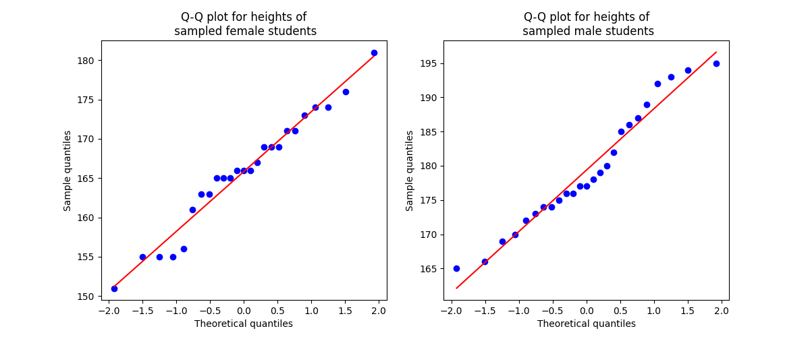
The data of both samples falls roughly onto a straight line. Based on the graphical evaluation approach we conclude that the data is normally distributed.
We now conduct the two standard deviations \(F\)-test. The null hypothesis is \(H_0: \sigma_1 = \sigma_2\), and the alternative hypothesis is \(H_1: \sigma_1 \neq \sigma_2\). This formulation results in a two-sided hypothesis test. We choose a significance level of \(\alpha=0.05\).
from scipy.stats import f
F_statistic = (sample_std_males**2) / (sample_std_females ** 2)
print(F_statistic)
df_1 = df_2 = n - 1
p_value = f.cdf(F_statistic, df_1, df_2)
print(p_value)Output:
1.3901443625510146
0.7872008348344762The p-value is greater than the specified significance level of 0.05. At the 5% significance level the data does not provide sufficient evidence to conclude, that the standard deviations of the heights of female and male students differ significantly from each other.
More on Bartlett’s test and Levene’s test later!
Chi-Square Goodness-of-Fit Test
The \(\chi^2\)-goodness-of-fit test is used to perform hypothesis tests on the distribution of a qualitative (categorical) variable or on a discrete quantitative variable that has only finitely many possible values.
The basic idea of the \(\chi^2\)-goodness-of-fit test is to compare frequencies. We compare a sample’s observed frequencies with the corresponding expected frequencies.
To illustrate the \(\chi^2\)-goodness-of-fit test, we examine whether religions are equally distributed among students compared with the distribution of religions in the population of the European Union. The data at the continental level are provided in the report “Discrimination in the EU in 2012” (European Union: European Commission, Special Eurobarometer 393, p. 233).
The \(\chi^2\) test statistic for a goodness-of-fit test is given by: \[\chi^{2} = \sum \frac{(O - E)^{2}}{E}\]
Where \(O\) represents the observed frequencies and \(E\) represents the expected frequencies. If the null hypothesis is true, the test statistic \(\chi^2\) follows a chi-square distribution.
The report provides data for eight categories of how people described themselves:
- 48% as Catholic
- 16% as Non-believers/Agnostic
- 12% as Protestant
- 8% as Orthodox
- 7% as Atheist
- 4% as Other Christian
- 3% as Other religion/None stated
- 2% as Muslim
We plot the data as a pie chart for better understanding:
import pandas as pd
import seaborn as sns
import matplotlib.pyplot as plt
data = [48, 16, 12, 8, 7, 4, 3, 2]
religions = ["Catholic", "Non believer/\nAgnostic", "Protestant",
"Orthodox", "Atheist", "Other Christian",
"Other religion/None stated", "Muslim"]
data = pd.Series(data, index = religions)
data.plot.pie(colors = sns.color_palette("Set3", 8))
plt.show(block=True)
First, we want to know which categories are available in the students data set for the
column religion. Therefore, we apply the unique()
method, which returns the levels (categories) of a variable:
import pandas as pd
import numpy as np
students = pd.read_csv("https://userpage.fu-berlin.de/soga/data/raw-data/students.csv")
print(students["religion"].unique())Output:
['Muslim' 'Other' 'Protestant' 'Catholic' 'Orthodox']In the students data set there are only 5 categories compared to the 8 categories above. Therefore, we need to combine some of the original categories:
data_raw = [48, 2, 8, (16 + 7 + 4 + 3), 12]
religions = ["Catholic", "Muslim", "Orthodox", "Other", "Protestant"]
data = pd.Series(data_raw, index = religions, name = "relative_frequency") / 100
print(data.to_frame())Output:
relative_frequency
Catholic 0.48
Muslim 0.02
Orthodox 0.08
Other 0.30
Protestant 0.12
Now we take a random sample based on the
students data set. The sample size is \(n = 256\). Afterwards, we count the number of
students in each religion category using the groupby() function. Recall that this
quantity corresponds to the observed frequencies.
n = 256
sample = students.sample(n, random_state = 8).groupby(["religion"])
print(sample.size().to_frame("Observed Frequencies"))Output:
Observed Frequencies
religion
Catholic 80
Muslim 12
Orthodox 21
Other 104
Protestant 39
Let's combine both pieces of information into a nice-looking table by converting them into a
pandas DataFrame object:
df = pd.DataFrame({'relative frequencies' : data,
'observed frequencies' : sample.size()})
print(df)Output:
relative frequencies observed frequencies
Catholic 0.48 80
Muslim 0.02 12
Orthodox 0.08 21
Other 0.30 104
Protestant 0.12 39
In the next step, we calculate the expected frequencies and add this information as a separate
column to our existing DataFrame df
using \(E = n \times p\).
df["expected frequencies"] = df["relative frequencies"] * 256
print(df)Output:
relative frequencies observed frequencies expected frequencies
Catholic 0.48 80 122.88
Muslim 0.02 12 5.12
Orthodox 0.08 21 20.48
Other 0.30 104 76.80
Protestant 0.12 39 30.72Once we know the expected frequencies, we must check two assumptions:
• All expected frequencies must be at least 1.
• At most 20 % of the expected frequencies should be less than 5.
We can confirm that both assumptions are fulfilled by inspecting the table.
In order to conduct a χ² goodness-of-fit test in Python using the
stats
module from the
scipy package, we apply the chisquare() function. We only have to
provide the observed and expected frequencies, which we pass as column selections from our
DataFrame.
from scipy import stats
test_result = stats.chisquare(df["observed frequencies"], df["expected frequencies"])
print(test_result)Output:
Power_divergenceResult(statistic=np.float64(36.086588541666664), pvalue=np.float64(2.777403262517103e-07))At the 1 % significance level, the data provide very strong evidence to conclude that the religion distribution among students differs from the religion distribution in the population of the European Union.
The Chi-Square Independence Test
The \(\chi^2\) independence test is an inferential method used to determine whether an association exists between two variables. As with other hypothesis tests, the null hypothesis states that the two variables are not associated, whereas the alternative hypothesis states that the two variables are associated.
Recall that statistically dependent variables are called associated variables, while variables that are not associated are called statistically independent variables. Also recall the concept of contingency tables (also known as two-way tables, cross-tabulation tables, or cross tabs).
The basic idea behind the \(\chi^2\) independence test is to compare the observed frequencies in a contingency table with the expected frequencies, assuming that the null hypothesis of non-association is true. The expected frequency for each cell of a contingency table is given by \[ E = \frac{R \times C}{n} \]
where \(R\) is the row total, \(C\) is the column total, and \(n\) is the sample size.
Once we know the expected frequencies, we must check two assumptions:
• All expected frequencies must be at least 1.
• At most 20 % of the expected frequencies may be less than 5.
We can confirm that both assumptions are satisfied by inspecting the table.
The comparison is based on the \(\chi^2\) test statistic for the observed and expected frequencies. The \(\chi^2\) test statistic follows the \(\chi^2\) distribution and is given by: \[ \chi^{2}= \sum \frac{(O - E)^{2}}{E} \]
where \(O\) represents the observed frequency and \(E\) represents the expected frequency. Note that \(\frac{(O - E)^2}{E}\) is calculated for each cell and then summed.
The number of degrees of freedom is given by: \[ df = (r - 1) \times (c - 1) \]
where \(r\) and \(c\) are the numbers of possible values for the two variables under consideration.
If the null hypothesis is true, the observed and expected frequencies are roughly equal, resulting in a small value of the \(\chi^2\) test statistic, which supports \(H_0\). However, if the value of the \(\chi^2\) test statistic is large, the data provide evidence against \(H_0\).
We want to examine whether there is an association between the variables gender and major. In other words, we want to know whether male students favor different fields of study compared to female students.
import pandas as pd
import numpy as np
students = pd.read_csv("https://userpage.fu-berlin.de/soga/data/raw-data/students.csv")
n = 865
sample = students.sample(n, random_state = 8)
observed_frequencies_table = pd.crosstab(sample.major, sample.gender, margins=False)
print(observed_frequencies_table)Output:
gender Female Male
major
Biology 102 66
Economics and Finance 53 82
Environmental Sciences 63 88
Mathematics and Statistics 33 93
Political Science 111 61
Social Sciences 78 35
To conduct a \(\chi^2\) independence test in Python using the
stats
module from SciPy, we apply the chi2_contingency()
function. We only need to provide a contingency table of the observed frequencies as either a
pandas DataFrame or a NumPy array.
from scipy.stats import chi2_contingency
test_result = chi2_contingency(observed_frequencies_table)
print(test_result)Output:
Chi2ContingencyResult(statistic=np.float64(77.31526633939146), pvalue=np.float64(3.056046255717623e-15), dof=5, expected_freq=array([[85.4566474 , 82.5433526 ],
[68.67052023, 66.32947977],
[76.80924855, 74.19075145],
[64.09248555, 61.90751445],
[87.49132948, 84.50867052],
[57.47976879, 55.52023121]]))We may conclude that, at the 5 % significance level, the data provide very strong evidence of an association between gender and major field of study.
Inferences About the Slope
The linear model is given by the equation \[ y = \alpha + \beta x + \epsilon \]
where \(\alpha\) is the intercept, \(\beta\) is the regression coefficient, and \(\epsilon\) is the error term. The best regression line is found by applying the ordinary least squares method, which minimizes the sum of squared errors (SSE). This means minimizing the squared difference between the measured response variable \(y\) and the model prediction \(\hat{y}\), which is given by \[ \mathrm{SSE} = \sum_{i=1}^{n} \epsilon_i^2 = \sum_{i=1}^{n} (y_i - \hat{y}_i)^2 \]
We will go into more detail when we discuss linear regression.
The regression t-test is applied to test whether the slope \(\beta\) of the population regression line is equal to \(0\). Based on this test, we may decide whether \(x\) is a useful (linear) predictor of \(y\).
The test statistic follows a t-distribution with \(df = n - 2\) degrees of freedom and can be written as \[ t = \frac{\beta}{s_b} = \frac{\beta}{\dfrac{s_e}{\sqrt{\sum (x - \bar{x})^2}}} \] where \(\beta\) corresponds to the sample regression coefficient and \(s_e\) to the residual standard error (also known as the standard error of the estimate), given by \[ s_e = \sqrt{\frac{\mathrm{SSE}}{n - 2}} \text{.} \]
The \(100(1 - \alpha)\%\) confidence interval for \(\beta\) is given by \[ \beta \pm t_{\alpha/2} \times \frac{s_e}{\sqrt{\sum (x - \bar{x})^2}} \text{.} \]
The value of \(t_{\alpha/2}\) is obtained from the t-distribution for the given confidence level and \(n - 2\) degrees of freedom.
In order to illustrate the regression t-test, we examine the relationship between two variables: students’ height as the predictor variable and students’ weight as the response variable. The question is whether height is a useful predictor of students’ weight.
The null hypothesis states that there is no linear relationship between the height and the weight of the individuals in the students data set, \(H_0: \beta = 0\), meaning that the predictor variable is not useful for making predictions. The alternative hypothesis states that there is a linear relationship, \(H_A: \beta \neq 0\), meaning that the predictor variable is useful for making predictions.
In order to conduct a regression t-test in Python using the
stats
module from the scipy package, we apply the
linregress()
function. We only need to provide our data separately as NumPy arrays. Furthermore, the test
method can be specified using the alternative argument. Because the default is
already set to two-sided, no adjustment is required.
import pandas as pd
import numpy as np
from scipy.stats import linregress
students = pd.read_csv("https://userpage.fu-berlin.de/soga/data/raw-data/students.csv")
n = 12
sample = students.sample(n, random_state = 9)[["height", "weight"]]
test_result = linregress(sample["height"], sample["weight"])
print(test_result)Output:
LinregressResult(slope=np.float64(0.7477660695468915), intercept=np.float64(-54.99202318229716), rvalue=np.float64(0.940268246582142), pvalue=np.float64(5.414310239986541e-06), stderr=np.float64(0.08561453550612985), intercept_stderr=np.float64(15.028988955403905))The p-value is smaller than the specified significance level of 0.01; therefore, we reject \(H_0\). At the 1% significance level, the data provide very strong evidence that height is a good predictor of students’ weight.
Inferences About the Linear Correlation Coefficient
In order to test whether two variables are linearly correlated, or in other words, whether there is a linear relationship between them, we may apply the so-called correlation t-test. The population linear correlation coefficient, \(\rho\), measures the linear correlation between two variables in the same manner as the sample linear correlation coefficient, \(r\), measures the linear correlation between two variables in a sample of paired observations. Both \(\rho\) and \(r\) describe the strength of the linear relationship between two variables; however, \(r\) is an estimate of \(\rho\) obtained from sample data.
The linear correlation coefficient of two variables lies between \(-1\) and \(1\). If \(\rho = 0\), the variables are linearly uncorrelated; thus, there is no linear relationship between them. If \(\rho \neq 0\), the variables are linearly correlated. If \(\rho > 0\), the variables are positively linearly correlated, whereas if \(\rho < 0\), they are negatively linearly correlated.
A commonly used statistic to quantify the linear relationship between quantitative variables is the Pearson product–moment correlation coefficient. It is given by \[ r = \frac{\sum_{i=1}^{n} (x_i - \bar{x})(y_i - \bar{y})} {\sqrt{\sum_{i=1}^{n} (x_i - \bar{x})^2}\sqrt{\sum_{i=1}^{n} (y_i - \bar{y})^2}} = \frac{s_{xy}}{s_x s_y} \]
where \(s_{xy}\) is the covariance of \(x\) and \(y\), and \(s_x\) and \(s_y\) are the standard deviations of \(x\) and \(y\), respectively.
Since the sample linear correlation coefficient \(r\) is an estimate of the population linear correlation coefficient \(\rho\), we may use \(r\) to perform a hypothesis test for \(\rho\). The test statistic for a correlation test follows a t-distribution with \(n - 2\) degrees of freedom and can be written as \[ t = \frac{r\sqrt{n - 2}}{\sqrt{1 - r^2}}. \]
In order to showcase the correlation t-test, we examine the relationship between the variable
score1 and score2, which show the result of two mandatory statistics
exams. The question is whether a linear relationship exists between the grades of two
consecutive statistics exams.
The null hypothesis states that there is no linear relationship between the grades of two consecutive statistics exams, \(H_0: r = 0\). Recall that the formulation of the alternative hypothesis dictates whether a two-sided, left-tailed, or right-tailed hypothesis test is applied. The alternative hypothesis \(H_A: r \neq 0\) results in a two-sided hypothesis test.
In order to conduct a correlation
t-test in Python using the
stats
module from the
scipy package, we apply the
pearsonr()
function. We only need to provide our data separately as NumPy arrays. Furthermore, the test
method can be specified using the
alternative argument. Because the default is already set to two-sided, no
adjustment is required.
import pandas as pd
import numpy as np
from scipy.stats import pearsonr
students = pd.read_csv("https://userpage.fu-berlin.de/soga/data/raw-data/students.csv")
n = 50
sample = students[["score1", "score2"]].dropna().sample(n, random_state = 9)
test_result = pearsonr(sample["score1"], sample["score2"])
print(test_result)
Output:
PearsonRResult(statistic=np.float64(0.8738759767952877), pvalue=np.float64(1.2019492648237161e-16))At the 1 % significance level, the data provides very strong evidence to conclude, that the exam grades of students are linearly correlated.
Linear Regression
Regression analysis is a statistical process for estimating the relationships between two or more variables. The relationship is modeled as \( y \sim x \) or \( y = f(x) \). Both model descriptions indicate that the variable \( y \) is a function of \( x \). Therefore the variable \( y \) is denoted as the response or dependent variable, whereas the variable \( x \) is denoted as the predictor or independent variable.
This section will be completed later!
Polynomial Regression
This section will be completed later!
Logistic Regression
This section will be completed later!